Capítulo 18
El retrato: máscara, carácter, esencia espiritual
No existe una definición exacta del retrato. Se puede buscar en diccionarios, enciclopedias, manuales la definición de la palabra «retrato». En general, por retrato se entiende toda imagen de una persona dada, y el retrato se considera siempre o bien de forma estadial (estas son las leyes del desarrollo del retrato romano, estos son los retratos del siglo XX), o bien de forma problemática (por ejemplo, los retratos de mujeres o los retratos de niños en el arte).
La definición más sutil del retrato la dio en su libro Manana Iraklievna Andrónikova1, que propuso un cierto eje: el acercamiento o alejamiento del parecido documental con el modelo. Dijo así: «El retrato es la imagen según el ser y la semejanza». Así como Dios crea al hombre a su imagen y semejanza, el pintor crea el retrato a imagen y semejanza. La semejanza es la documentalidad, es decir, el parecido, y la imagen es la representación del pintor, lo que él pone en esa imagen. Hay retratos máximos en imagen, donde el modelo ya es irreconocible. Y hay retratos con máxima aproximación, parecido, por ejemplo, el retrato documental romano.
Pero el caso es que, en tal caso, queda una enorme cantidad de cosas que no entran en el concepto de «retrato». Por ejemplo, ¿es el icono un retrato o no? Claro que lo es, aunque muchos consideran que no, pues en el icono no está representado un rostro real. Pero los santos fueron personas vivas, y la crónica hagiográfica es una cosa muy exacta. Más aún, sabemos con certeza cuándo aparece el primer santo, cuándo se produce la canonización. Todo esto ocurre bajo el emperador Diocleciano2, cuando en lugar de las tumbas cristianas fraternas aparecen los procesos individuales. Y entonces surgen los héroes del panteón cristiano. Son originales: Jorge es original, Sebastián es original. Sobre los originales se sostiene todo el arte medieval. Es precisamente la imagen de esta persona, y además con su biografía. Por eso puede decirse con seguridad que el icono es también un retrato. He aquí, por ejemplo, Nicolás el Taumaturgo: es un icono, pero al mismo tiempo también un retrato puro.
O planteemos la cuestión de otro modo. Miguel Ángel hace la tumba de los Médici. Representa a personas concretas: he aquí Lorenzo, he aquí Juliano. Hizo sus imágenes, y sus contemporáneos le dicen: «Perdone, no se parecen». En otro tiempo el artista habría pensado y hecho de otro modo, ya que el cliente está descontento, pero eran tiempos en que el artista era legislador. Y dijo: «Pues que no se parezcan, ¿y quién dentro de cien años sabrá si se parecen o no?»3 Miguel Ángel ignoró el original que tenía ante los ojos y tradujo sus obras a la serie de la abstracción retratística.
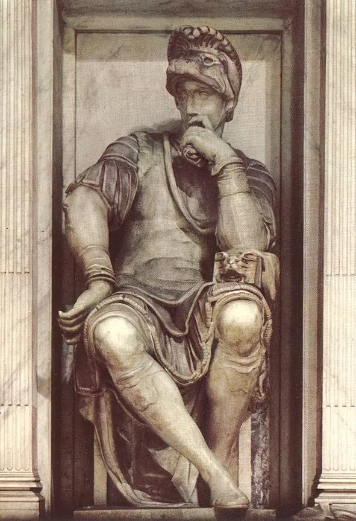
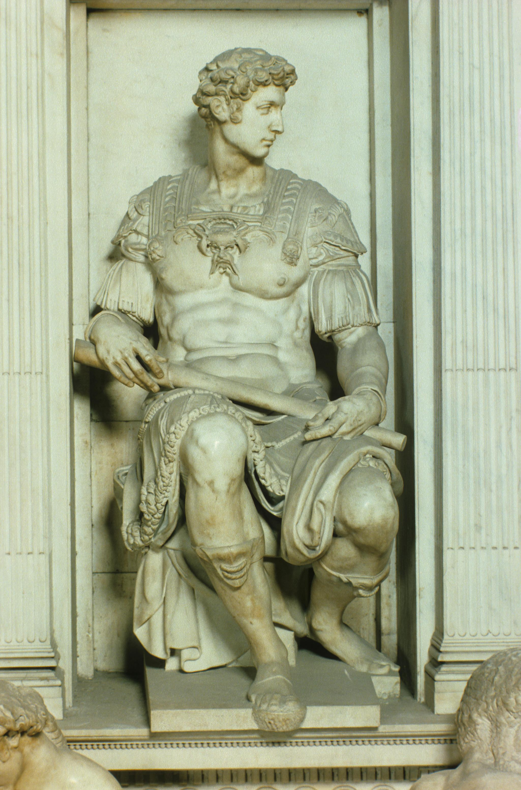
¿Y existen retratos colectivos? ¿Existe ese término en la literatura artística: «retrato colectivo»? Sí, existe. El mayor maestro de retratos colectivos es el pintor soviético Deineka. Tiene una imagen del colectivo como retrato. Por ejemplo, «La defensa de Sebastopol» es un retrato colectivo.4
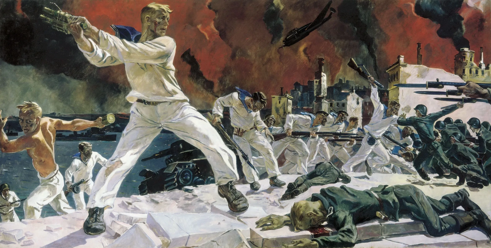
¿Y qué es el cuadro «La boyarda Morózova»? Surikov pintó a los personajes del natural, los modelos son conocidos, sus nombres son conocidos. Que no sean personalidades famosas no significa que no sean dignos de ser retratados.
«La ronda de noche» de Rembrandt es también un retrato colectivo. O el otro cuadro bien conocido que siempre permaneció enigmático: «Las Meninas» de Velázquez. Tampoco es un retrato de colectivo, sino un retrato colectivo. Nos son conocidos los nombres de cada personaje. Incluso el nombre de la famosa enana María Bárbola, que está junto a la ventana y sostiene en las manos una orden con cinta azul5. Es una orden muy alta, y ella misma era una persona muy conocida en la corte.

Tomemos la Antigüedad. Se sabe con absoluta certeza que Grecia no tuvo arte retratístico.6 La Antigüedad romana tiene arte retratístico, y Grecia no. Incluso en la época del helenismo no hubo retrato en Grecia. Solo en tiempos helenísticos muy tardíos, en Alejandría, bajo la influencia de Egipto, aparecen retratos. Pero en principio los retratos los crea Roma.
Al mismo tiempo, no puede decirse que esto no sea un retrato. Es un retrato muy serio. Trazar la frontera entre el género evidente de la pintura retratística —la imagen de una persona dada— y la imagen del hombre en general es prácticamente imposible. Por eso será razonable considerar toda imagen del hombre como retrato. No hay imagen humana que no sea un retrato.
Por ejemplo, Miguel Ángel se representó a sí mismo en la pared de la Capilla Sixtina, en la escena del Juicio Final, de tal modo que ni su propia madre lo habría reconocido7: piel vuelta del revés, rasgos faciales distorsionados. Al mismo tiempo se sabe que es su autorretrato más auténtico, más fidedigno. Con esa imagen se ejecutó a sí mismo; en ese autorretrato, donde se representa como una piel desollada, se burló de sí mismo.
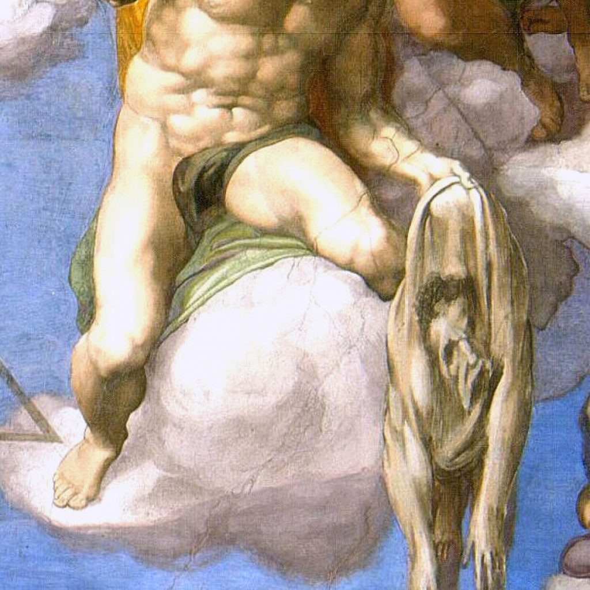
Las imágenes detalladas o figuradas: todo ello es en igual medida un retrato. El retrato aparece cuando aparece la primera imagen del hombre.
Sin embargo, aquí hay que subrayar la diferencia entre cómo representa el hombre el arte europeo y cómo lo representa el arte oriental, por ejemplo el chino o el japonés. Es una diferencia muy esencial.
El arte europeo siempre fue antropocéntrico: todo está vinculado a la imagen del hombre. Los orígenes del arte europeo se hallan, como se sabe, en el arte del Mediterráneo, en la Antigüedad. Y la Antigüedad comenzó de inmediato a formarse como arte que representa al hombre. Nada más que la imagen del hombre tuvo la Antigüedad. ¿Representaba la Antigüedad la naturaleza, el mundo objetivo, extraído de la creación del hombre, existente objetivamente fuera de la conciencia humana? No, eso nunca existió. El hombre era la naturaleza. El hombre es la expresión de la armonía del Universo; él mismo llevaba en sí esa idea de la naturaleza como unidad divina y armónica del Cosmos.
Tampoco hubo imagen de la naturaleza en la Edad Media, porque había imagen del paraíso y del infierno, absolutamente bello y absolutamente deforme, con signo «más» y con signo «menos». Pero el mundo objetivo en las imágenes no existía.
Las primeras imágenes de la naturaleza en el arte europeo están vinculadas a la época del Renacimiento, a finales del siglo XVI y comienzos del XVII. Los primeros géneros paisajísticos aparecen solo en el siglo XVII.8 Incluso en la literatura las primeras imágenes de la naturaleza y del mundo objetivo aparecen a partir de las novelas de viajes.
No es casual que en Shakespeare, en el teatro «Globe», estuviera escrito «león» o «castillo» en una tablilla: el hombre ocupaba con su persona el espacio del mundo, y el espacio del mundo se sometía a su escala.
Lo mismo puede decirse de la imagen de los objetos. La Antigüedad nos muestra a Atenea con escudo, lanza y casco: son sus atributos. No hay imagen separada del escudo o de la lanza; esos objetos son comentarios a la imagen del personaje dado.
Los bodegones aparecen en la obra de un pintor como Caravaggio. Él es el primer maestro del bodegón como género artístico independiente.9 Esto también es finales del siglo XVI y comienzos del XVII. ¡Ven ustedes qué tarde comienza a separarse el entorno natural y el entorno objetual del hombre! El arte europeo es antropocéntrico de arriba abajo. Precisamente por eso el arte europeo puede considerarse absolutamente retratístico, independientemente de si lo consideramos de forma estadial, es decir, por hitos de la historia del arte, o lo consideramos de forma problemática, por ejemplo, la imagen de la mujer en el arte, la imagen de los niños, los caracteres.
La mitología antigua, que yace en la base de la formación de todo el arte europeo, es antropomórfica de arriba abajo. Zeus puede transformarse en lluvia, en toro, en rayo, en lo que sea (lo que él, travieso, hacía). Todos pueden transformarse en lo que sea. El signo principal es el signo del parecido humano, tal como los pintores y escultores lo representaban.
Otra cosa completamente distinta, otro ejemplo completamente distinto, es el arte del Extremo Oriente. Como base en el arte del Extremo Oriente se toma la imagen de la naturaleza, y no la del hombre. El arte chino comienza a formarse aproximadamente cuando surge el arte del antiguo Egipto, es decir, hacia el trigésimo siglo antes de nuestra era10. Aparece cuando surgen las pirámides egipcias y los primeros monumentos del arte egipcio, es decir, en el siglo XXVII antes de nuestra era.
Desde el principio el arte chino se forma como imagen de montañas y aguas, de montañas y cascadas. El arte chino, el arte de Japón y en general del Extremo Oriente, es una cultura salida del paisaje, de la naturaleza. Lo principal es la naturaleza. La primera academia artística del mundo11 formuló las leyes de la imagen del paisaje con mucha claridad, como imagen de cinco elementos: cómo se pintan, dónde están los momentos de apoyo principales en la imagen: montaña y agua. La montaña como algo inmutable, eterno; el agua como algo variable, temporal, movimiento fugaz.
Y el hombre estaba sometido a determinadas leyes de la imagen. El rostro del hombre es considerado por el arte chino paisajísticamente. El paisaje tiene cinco puntos: el central es la nariz, el punto norte es la frente y los huesos frontales, el punto sur es el mentón, y también tiene oeste y este. El rostro del hombre es considerado como un paisaje cósmico. Las primeras reglas de la imagen del hombre fueron creadas por los mayores teóricos chinos del retrato de la época preconfunciana (Confucio es contemporáneo de Buda y Pitágoras, es el siglo VI antes de nuestra era). Ellos condicionan la consideración del rostro del hombre como paisaje cósmico.
El retrato en la antigua China tuvo gran importancia. Ese retrato se considera de un modo fundamentalmente distinto. El rostro del hombre representa un mapa admirable. Consideran las fosas nasales como cavernas, consideran la boca de un modo determinado, así como los ojos y los párpados. Crean a partir de estas descripciones paisajístico-geográficas una de las ciencias más famosas, que nuestra psicología considera pseudociencia. Y ellos, sobre la base de esa pseudociencia, existieron muchos miles de años, y nada. Es la ciencia de la frenología.12 Precisamente ellos son sus fundadores, los teóricos. Y los primeros tratados frenológicos están vinculados a la escritura del retrato. Los chinos no pueden representar al hombre así como así. Según la definición de los chinos, el hombre es un gusano de seda. Usan el concepto de dao: es la esencia espiritual sin principio ni fin del mundo. El hombre respecto al dao es nada. Someten cada tipo a una determinada unidad frenológica, a una determinada idea frenológica.
Los retratos chinos son extraordinariamente interesantes. Tienen una peculiaridad notable. El caso es que cualquier cuadro tiene un marco; el marco personifica la idea de ventana. Y es la idea de ventana tanto desde nosotros hacia allá como desde allá hacia acá. Pues se sabe que no somos nosotros quienes miramos el cuadro, sino el cuadro quien nos mira a nosotros, y por tanto esa ventana es desde allá hacia acá. Es el método europeo de considerar el cuadro, la consideración del cuadro como ventana.
El método chino considera el cuadro como espejo. Los primeros cuadros chinos se pintaban precisamente en el reverso del espejo. Cuales eran las formas de los espejos, tales eran las formas de los retratos. El espejo da de por sí una imagen muy vacilante e inmaterial, efímera. Por eso los retratos se pintaban solo sobre seda o sobre laca y solo con pinceles especiales. Esto se hacía para que el retrato no tuviera densidad física, volumen físico, para que fuera algo efímero. Pintaban con un pincelito fino, solo con tinta negra. Eran imágenes inmateriales con el signo de su frenología.
Hace mucho tiempo que se crearon los principios de la pintura china. La esencia del retrato chino es la imagen en el espejo de tu espíritu, y no de tu carne. Estas reglas del retrato chino han permanecido inmutables hasta hoy. Nunca los chinos pudieron aprender a pintar como en Europa.
Cuando los chinos representan al hombre teniendo en cuenta la edad, a menudo es un retrato de anciano. Aquí tienen obligatoriamente en cuenta varios momentos, y el más importante de ellos es el escorzo de las fases de perfil. Cada escorzo tiene sus designaciones. Hay edades que de perfil no se pintan nunca, solo de frente completo. Todas las líneas indicadas por los frenólogos en el rostro se pintan obligatoriamente en el anciano, no para mostrar que está arrugado por la vejez, sino para mostrar que ha vivido su vida y ha concretado plenamente su frenología. Y a los niños los pintan todos igual, como conejitos. Allí no distingues quién está ante ti. Los pequeños son todos encantadores. Del mismo modo pintan a las muchachas: como flores.
Estas bases del retrato están tan lejos de nosotros que compararlas con los retratos europeos es imposible. Este arte se desarrolla según leyes completamente particulares, y el arte europeo se desarrolla según sus propias leyes. No se pueden comparar estas cosas, no se pueden aplicar los métodos de análisis del arte europeo al arte del Extremo Oriente. Según la definición de los chinos, no existen cuatro, sino cinco puntos cardinales: cuatro nos son conocidos, y el quinto es China.
Volvamos de nuevo a la formulación de la cuestión sobre los métodos de consideración del retrato europeo. Omitamos la fase estadial, pasemos directamente a la formulación del problema.
Todos los retratos pueden dividirse en tres grupos completamente distintos: el retrato como máscara, el retrato como carácter, el retrato como esencia espiritual. Con tal enfoque se vuelve un poco más fácil orientarse en el enorme espacio artístico, no solo pictórico, sino también literario, filosófico, ya que la cultura es una en su desarrollo, en su movimiento. La cultura tiene algunos problemas comunes también en su estado estadial.
Ante todo, unas palabras sobre Picasso. He aquí dos retratos de un hombre muy conocido en la historia de la cultura. Fue vendedor de cuadros, filósofo, historiador del arte. Es Ambroise Vollard. El primer retrato en el estilo de Ingres, el segundo, el famoso retrato cubista del Museo de Bellas Artes. ¿Cómo puede decirse dónde se parece a sí mismo y dónde no, dónde hay verdad sobre él y dónde no? Estos retratos son llamativamente contrastantes. Pero no puede decirse que los separe un tiempo considerable.
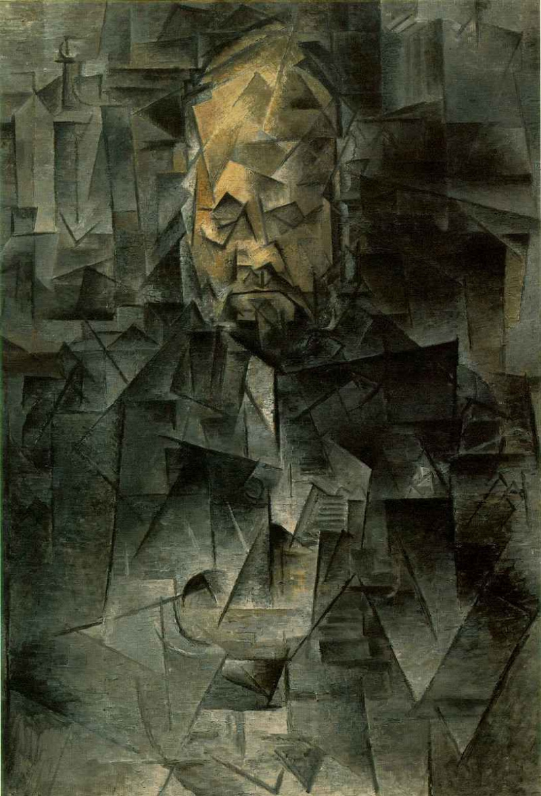
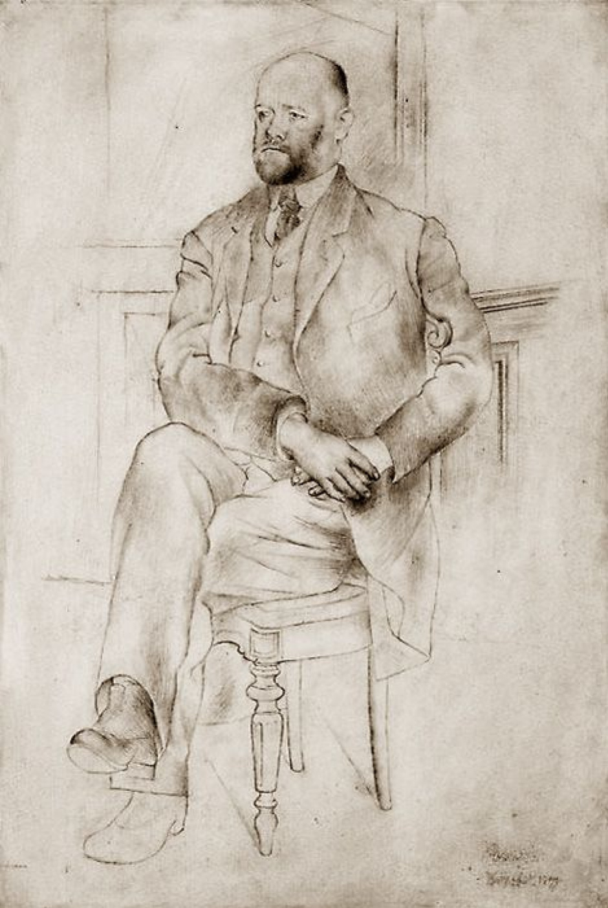
He aquí el retrato de una mujer: la señorita Walter13, a quien pintó muy a menudo. ¿Cómo es este modelo aquí? La mujer está representada con mucha delicadeza, en estilo antiguo, como si fuera de una vasija. El pintor la dibuja en azul, y el color azul, por su semántica cromática, es un color espiritual, color del espíritu, del cielo, del aire. Ella es como una flor, la ternura misma. Y el segundo retrato suyo da una imagen directamente opuesta. Está representada como una esfinge, en estilo egipcio, absolutamente inmóvil espiritualmente, muy rígida. El cuello es como una rígida construcción de hojalata, y la cabeza, ojos grandes azules fríos, no emocionales. Dónde está la verdad sobre ella es muy difícil decirlo. El hombre es infinitamente complejo: tanto esto como aquello es verdad sobre ella. Situacionalmente es así, y situacionalmente es otra.
El octogenario Luis Buñuel, un artista y cineasta español muy importante, rodó su última película, que se llama «Ese oscuro objeto del deseo»14. Un hombre de ochenta años, uno de los artistas más sociales, programáticamente sociales del siglo XX, dedica su última película al tema del amor. ¿Por qué ocurre esto? Este hombre poseía una gran sabiduría. A una heroína la interpretan dos actrices distintas, en nada parecidas entre sí. No se excluye que le sugiriera esta idea Picasso, porque la idea se impone. Una heroína es fría, rígida, absolutamente inmóvil, y la segunda es simplemente una flor.
Estas imágenes en el arte son retratos, aunque si tomamos la definición clásica del retrato, resultará que Picasso ni siquiera sabe dibujar. Pero en realidad es un retrato muy preciso, que capta profundamente la esencia. Cuantas imágenes existen, tantos escorzos o giros distintos de la persona dada existen.
Una sola imagen en el arte no puede dar nunca la descripción del modelo. Quizá precisamente desde este punto de vista el retrato chino, que parte de los rasgos frenológicos del hombre, es más voluminoso que el retrato europeo. El retrato europeo da solo un signo, solo una imagen de la personalidad dada.
No solo es retrato cualquier imagen del hombre, sino que en el arte no existe en absoluto el retrato psicológico. Nuestro análisis del retrato se reduce siempre a la misma afirmación. Valentín Serov, Yuri Pimenov, el pintor Korin, el camarada Rembrandt, el desconocido autor romano: da igual. Si es un retrato, reproducimos siempre la misma frase. En primer lugar, escribimos la palabra «realista», dando a entender «parecido». En segundo lugar, escribimos la frase «profundamente psicológico».
Rokotov es profundamente psicológico, y Levitski también es profundamente psicológico, y Rembrandt. Y todos los retratos resultan ser realistas y psicológicos.
Pues bien, retratos realistas no hay, y retratos psicológicos tampoco. Porque la psicología es ante todo la consideración de sistemas espaciales muy complejos: es el espacio interior y el espacio exterior, y los sistemas de comportamiento, es la interrelación. Pero se sabe que la psicología no es solo un sistema espacial, sino también un sistema temporal. Y el arte no dispone de la dimensión temporal.
¿Cuándo aparece el sistema temporal, cuándo aparece la psicología en la literatura? Aparece con Shakespeare, con Cervantes. ¿Acaso la tragedia antigua es psicológica, cuando está construida enteramente sobre una base mitológica? Su rasgo más importante es la predeterminación. La psicología aparece cuando en la literatura se vuelve posible seguir las líneas de conducta en el espacio y el tiempo. Antes de eso no existe. Y la conducta de la personalidad en el espacio y el tiempo se vuelve en la literatura objeto de atención a partir del siglo XVII. Cervantes considera la conducta en el espacio y el tiempo y el cambio de la personalidad en esas dimensiones.
Shakespeare hace otra cosa: crea un sistema de trampas, o un sistema de provocaciones, descubriendo con ello la personalidad del héroe. Shakespeare no sigue la conducta de la personalidad en el espacio y el tiempo. Ricardo, tal como apareció como sapo del agua, así se marchó. Ofelia, tal como apareció sin comprender nada, así se marchó. Pero la cadena de celadas que tiende Shakespeare descubre la personalidad.
Y en Cervantes, en la literatura, ya podemos ver cambios. ¿Acaso Don Quijote comienza su camino vital tal como lo termina? Llega al polo opuesto, y Sancho Panza llega al polo opuesto. Cambian de lugar.
Precisamente en el siglo XVII surgen los primeros intentos de crear un retrato psicológico. Es Velázquez, es Rembrandt, Tiziano, Frans Hals. Pero en ellos estos intentos se agotaron. Si la literatura sigue adelante por el camino de la elaboración precisamente del problema de la psicología, de la conducta de la personalidad en la situación espacio-temporal, el arte, por el contrario, tiene un único punto de aproximación al modelo a través del intento de considerar el mundo interior del hombre. Esto lo hacen Velázquez y Rembrandt, pero en esto los intentos terminan. Podemos decir que el retrato psicológico no existe. En él están presentes cualidades completamente distintas, que pueden faltar en la literatura. En el cine pueden llamarse psicológicos algunos momentos, sobre todo cuando los vemos en primer plano en una escena de montaje temporal. En la película puede incluirse simultáneamente el montaje de recuerdos sobre la persona dada o el montaje de recuerdos de la persona dada sobre sí misma. Es decir, cuando aparece ese montaje como unidad adicional, entonces puede hablarse de métodos de investigación psicológica. En la pintura no tenemos esa posibilidad.
Volvamos a los tres grupos de retratos de los que se habló más arriba. En este género artístico ocupa casi el lugar principal el retrato-máscara, o retrato de máscara.
Primero pongámonos de acuerdo sobre la terminología. En el retrato puede estar literalmente representada una máscara, pero este término tiene también otro sentido. El retrato-máscara existe durante mucho tiempo. El retrato-máscara es un retrato sincrético y es un retrato sintético. Por un lado, retrato físico; por otro, retrato trascendente.
La máscara es una cosa compleja, una cosa ritual. Cuando el hombre está en la máscara, adquiere poderes adicionales, completamente increíbles. En Shakespeare, en «La tempestad», Próspero es un hombre encantador, duque de Milán. En cuanto se quita su capa, se convierte en un sabio de gabinete al que cualquier bribón engaña. No está adaptado a nada. Y en cuanto se pone esa capa, se convierte en señor de los espíritus. Provoca la tempestad, levanta la tormenta en el mar, adquiere una fuerza extraordinaria.
Cuando el hombre, como resultado de muy largos entrenamientos y pruebas, obtiene el derecho a ponerse la máscara, se convierte en conquistador del Universo, posee una fuerza extraordinaria gracias a esa máscara. La máscara le da la posibilidad de comunicarse con ciertas fuerzas invisibles, no vistas, y le confiere un enorme poder. Su rostro ya no existe, se disuelve, se oculta, se vuelve anónimo. Precisamente por eso el actor se llama «licedei» (histrión)15. Mientras es simplemente Petia Ivánov, un hombre simpático; y cuando sale a escena y se pone la máscara de Vershinin, se convierte en conquistador de la sala, comienza a actuar en nombre de alguien. Su propio rostro desaparece. Por eso el primer teatro surge de la máscara. En general, cualquier teatro es máscara, y el teatro oriental es solo máscara, porque entre las acciones del sacerdote, del mago, y las acciones del actor no hay gran diferencia.
Miremos un fragmento de un retrato egipcio. ¿Es la esencia interior del hombre o la máscara que representa? Sin duda, la máscara. ¿Por qué? El retrato es ritual, se hace solo para las tumbas y tiene el nombre de «ka». Es un estuche. Para ellos todo eran estuches. La momia también es un estuche para conservar el cuerpo. Y la máscara es un estuche para el espíritu que retorna eternamente. Cada retrato sucesivo es morada para la encarnación. No sabemos quién era ese egipcio, pero que se parecía es un hecho. Según cómo se considere el parecido: como físico o como espiritual. Por eso Rembrandt se pintó tantas veces: sabía que la envoltura no vale nada. Y los egipcios consideraban que la envoltura era lo más importante.
He aquí otro retrato conocido: ¿psicológico, realista? ¿O es una máscara?16 Sin duda, máscara. La heroína con traje de mascarada, como pastora o algo así. ¿Acaso anda así, se mueve así en la vida? No, se puso en una pose pastoral, muy precisa. Y Levitski la pintó. Sí, era un gran especialista, pero era especialista en la máscara. Es su capacidad, su talento, su maestría. Hacía la máscara del siglo XVIII.
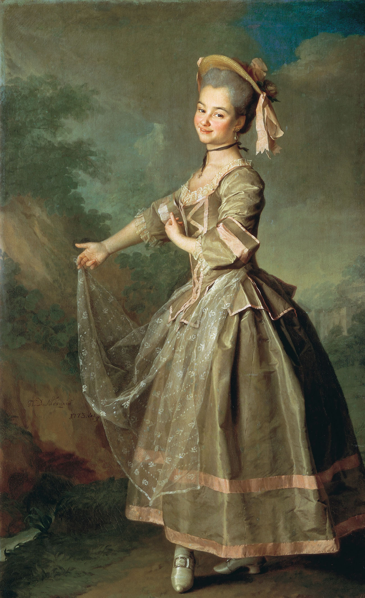
Y este retrato de Repin, «Retrato de la baronesa Ikskul»17. ¿Es un retrato psicológico, realista, o una máscara? A veces escriben que es un retrato social. Pero si se dice quién era esa baronesa, al que lo oiga se le pondrán las orejas coloradas. Quizá por eso ella aspira tanto a esa máscara, para que olvidemos quién era cinco años antes.
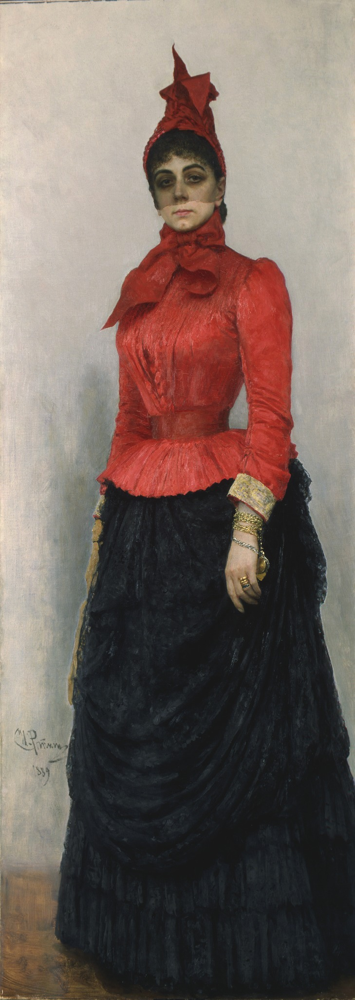
Pueden citarse muchísimos ejemplos así. El caso es que ante todo hay que renunciar a los enfoques tradicionales del retrato: si la imagen es de una persona, es retrato; si es de un colectivo, no lo es. Donde hay imagen del hombre, hay retrato. Y además hay que renunciar al enfoque uniforme.
El retrato creado por Rokotov, contemporáneo de Levitski, está pintado algo de otro modo. ¿Podemos ya llamar máscara a este retrato? Si este cuadro fuera una máscara, difícilmente un poeta como Zabolotski habría escrito los conocidos versos:
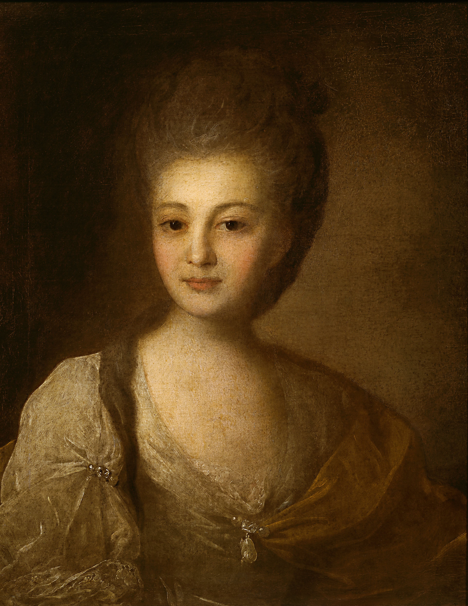
Un lugar especial ocupa «La Gioconda»: con el ejemplo de este solo cuadro puede contarse toda la historia del retrato, desde Egipto hasta el siglo futuro. Y surgen múltiples preguntas. En primer lugar, ¿es un retrato o no? En segundo lugar, ¿de quién es en general este retrato? Sí, claro, es un retrato. Los japoneses hicieron hablar un poco a «La Gioconda»19, y habló con la voz de Leonardo da Vinci. Habló con un buen y sólido bajo baritonal. Es una voz magnífica. El caso es que existe una ciencia llamada «criminalística». Establece que el rostro de la Gioconda es muy similar al rostro de Leonardo mismo. No podemos verificar la buena fe de los criminalistas, pero rumores de ese tipo existen. Si se le quita la peluca y todo lo demás, puede decirse que se parecen.
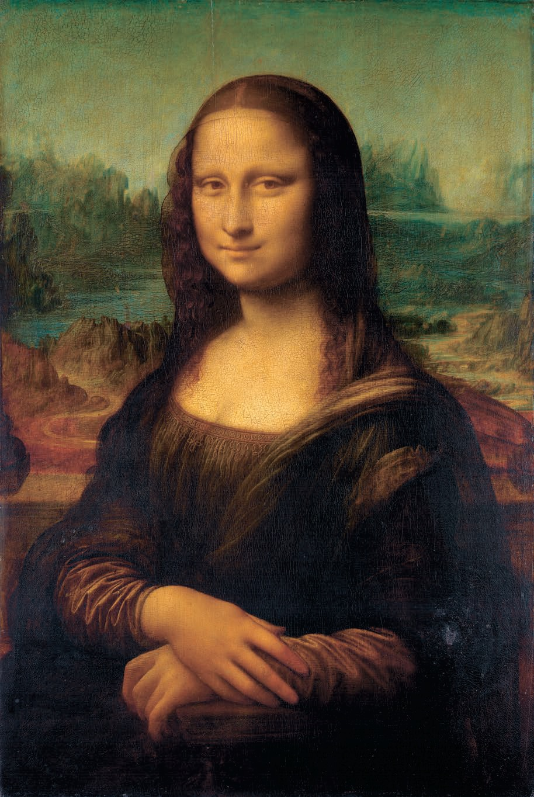
¿Qué es esto en general? Es ya un retrato con entorno. Cuando miramos el retrato de Levitski, nos resulta fácil y sencillo. Él también tiene retratos con entorno, pero su entorno es teatral: decorados, máscaras. Y aquí también hay entorno, gracias al cual el retrato tiene un carácter muy complejo por su concepción, por el volumen de mundo que abarca.
Pongamos algunos ejemplos según el tipo de tareas que se plantean los pintores. Volvamos de nuevo al antiguo Egipto. He aquí la famosa imagen en pareja: el príncipe Rahotep y la princesa Nofret. ¿Ejemplo de qué tipo de retrato? Pueden separarse, si queremos. Es una máscara típica. Están sentados completamente inmóviles, como estuches. En Egipto había un principio muy curioso de la imagen en el retrato. Los cuerpos de hombres y mujeres se hacían completamente indiferentes respecto al retrato. Son estuches absolutamente ideales. Y los rostros se hacían con unturas20, porque los ojos son «las puertas del alma», como decían los egipcios. Incluso en los tratados egipcios sobre las enfermedades principales estaba escrito: «Cuando te duelen los ojos, mira en tu alma»21.
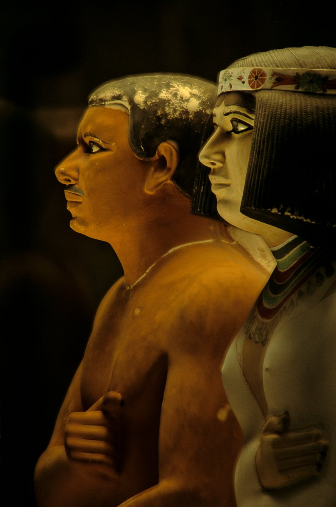
En general consideraban que las enfermedades oculares son enfermedades de orden nervioso, y no del aparato corporal. Consideraban que eran toda clase de desviaciones psíquicas funcionales. Y para ellos el ojo tiene gran importancia: es la puerta del «ka». Y el cuerpo es en general un estuche, un retrato puramente ritual, mágico. Entre la máscara clásica, de la que se habló más arriba, y este retrato «ka» no hay diferencia. Uno y otro son máscara. Máscara pura, mágica, que es el momento de la conexión trascendente entre el tiempo y la eternidad, entre la datidad y la infinitud del espacio, el momento del nudo en el arcano.
He aquí el retrato de El Greco. ¿De qué tipo es este retrato? ¿Qué interesa aquí al pintor más que nada? ¿Le interesa su condición de estuche o lo que está en general más allá de la materia? Adelgaza hasta el límite la capa física misma de este hombre. Cuando uno mira este cuadro en el museo, se ve esa sutileza extrema, ese pensamiento sobre el sufrimiento universal. Este retrato se atribuye de un modo muy interesante. En Toledo vivían entonces dos hermanos.22 Uno de ellos era helenista, era sordomudo. Se sabe que El Greco lo pintó. El pintor elimina de tal modo la línea de la boca, de las orejas, ilumina los ojos, la frente, que realmente parece que es el retrato de un sordomudo, rebosante de sufrimiento.
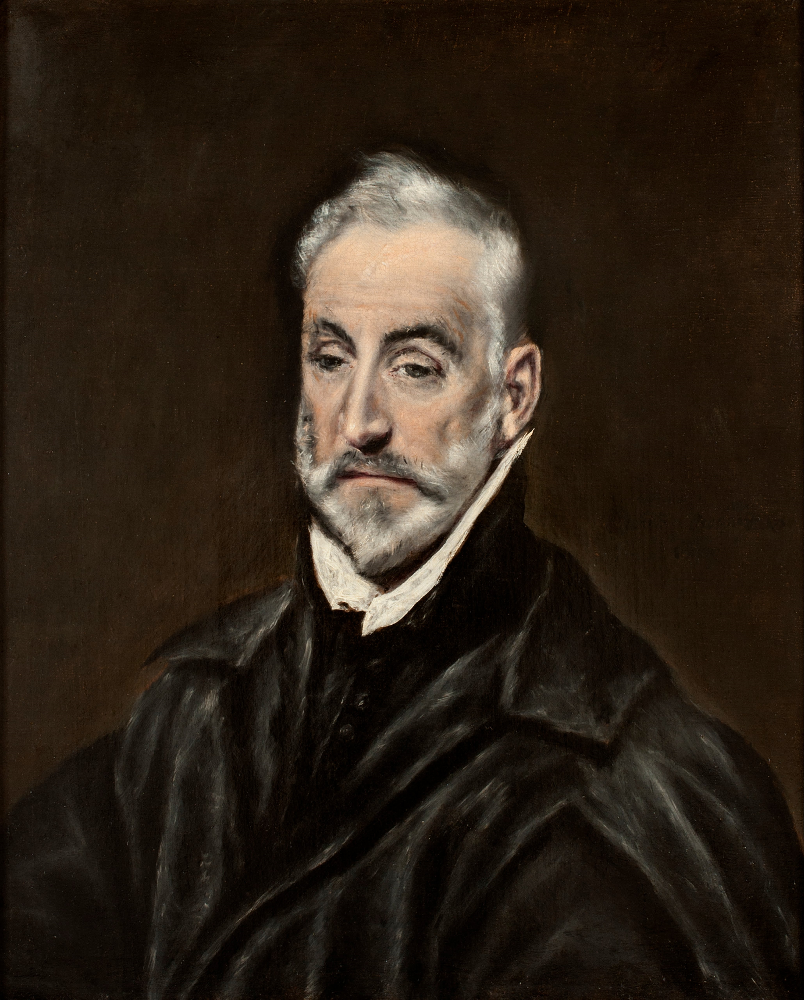
Y he aquí el contemporáneo de El Greco: Tiziano. Retrato de Ippolito Riminaldi.23 Tiziano pertenece a una categoría muy rara de retratistas. Hay muy pocos retratistas así. ¿Qué representa Tiziano? Es completamente evidente que no es una máscara. Pero al mismo tiempo está claro que aquí no hay absolutamente ninguna renovación espiritual. Aquí hay aspiración a transmitir el carácter de la personalidad humana.
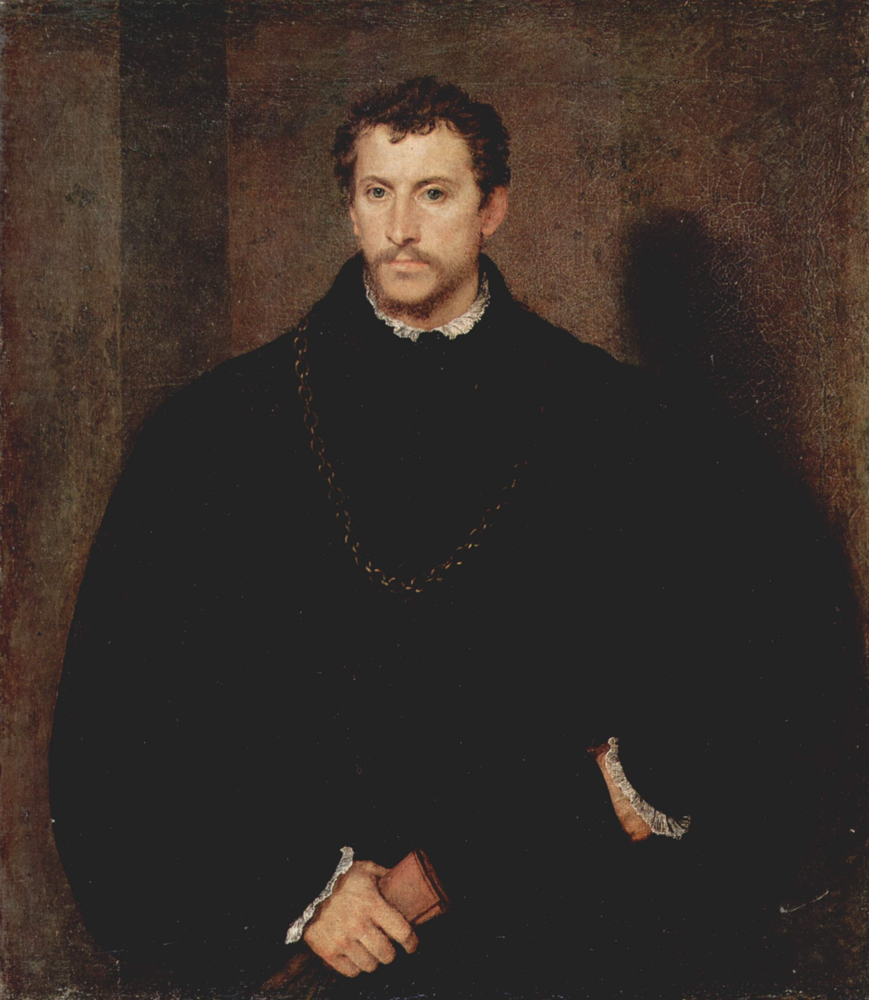
Cuando llevaron al mariscal Zhúkov por la Galería de Dresde, le preguntaron qué le había gustado más. Se acercó y señaló a Moretto.24 Es un ejemplo típico de reconocimiento de sí mismo. Aquel del siglo XVI miraba al mariscal Zhúkov del siglo XX, y su alma sonrió.
En la representación del carácter Tiziano era un maestro. Representa a la personalidad dada, al carácter dado.
Veamos para comparar el retrato del pintor Jacques-Louis David.25 Pintó a su contemporáneo. Miren qué mano tiene, qué bien vestido está. A esos tipos les encantaba describirlos a Balzac. ¡Cómo está acicalado, pulido, qué rostro tiene! He aquí el retrato de la máscara social. Qué personalidad hay detrás de esto, qué carácter hay detrás: todo está oculto, porque se ha convertido en lo que debía convertirse en esa cualidad.
Ahora miremos el retrato de Korin. ¿Hay alguna diferencia entre lo que hacen David y Korin? No. Hay diferencia en el lenguaje, pero no en las tareas. Porque Korin va absolutamente por el mismo camino. Es el retrato de la representatividad: fuerza, poder, voluntad. Y cualquier momento de representatividad es un momento de máscara.
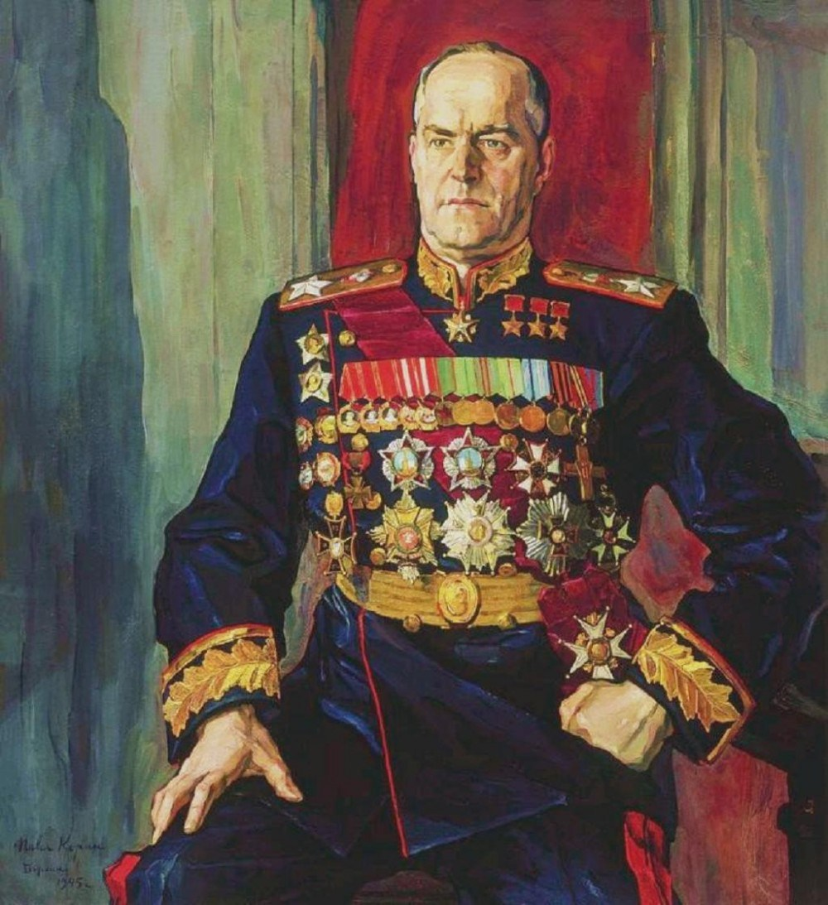
Quizá los retratos-máscara en el arte universal son el tipo de retrato más difundido. Podemos hacer un conjunto de las épocas más diversas. «Retrato de Luis XIV» de Rigaud es un retrato semántico, porque el retrato de máscara objetivamente puede distinguirse a través de signos semánticos. Precisamente el retrato de máscara está cargado al límite de signos semánticos. La semántica es una de las objetividades del retrato-máscara. La semántica es convincente, variada, y aquí hay que conocer el lenguaje de la época.
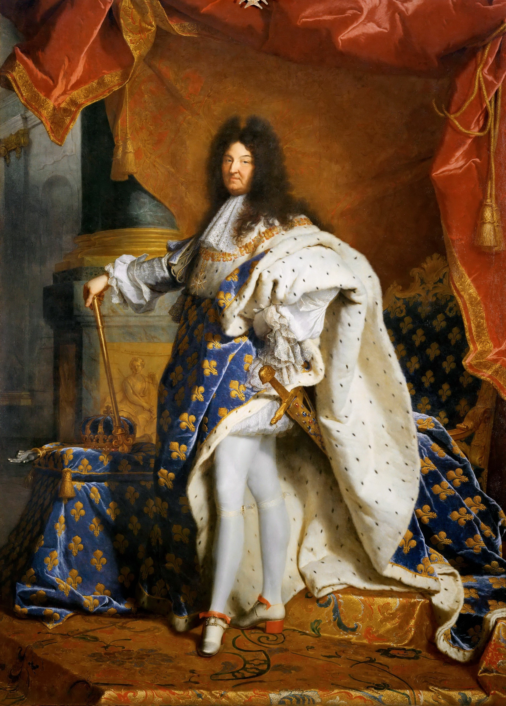
Octaviano Augusto, primer emperador romano. Es muy interesante que Shakespeare describe la coronación de Ricardo III26 según los mismos historiadores romanos que describen la coronación de Octaviano Augusto. Ricardo incluso dice las mismas palabras. Solo que no está claro: ¿es la situación la que obliga a las personas a decir las mismas palabras, o simplemente Shakespeare, que conocía bien la historia romana, pone las palabras de Augusto en boca de Ricardo? Pero eso no importa. Ante nosotros está el retrato del emperador. No es el retrato de Octaviano Augusto, es su retrato en calidad de emperador. Y los rasgos semánticos más importantes aquí son: la desnudez, es decir, la semejanza divina; el ir descalzo (o un tipo determinado de sandalias); la toga, drapeada de un modo determinado. En la mano el orbe, sobre el orbe la Victoria, en la cabeza la corona de laurel. Y ya sabemos que es Augusto, emperador. Es un retrato-máscara, y no un retrato de temperamento, de carácter. En la antigua Roma esta estatua poseía una gran fuerza semántica. El hombre que tocaba la estatua del emperador27 ya tenía derecho a examinar sus asuntos no en los tribunales, sino solo personalmente ante el emperador. Es decir, la personalidad queda bajo la protección de la égida divina del emperador.
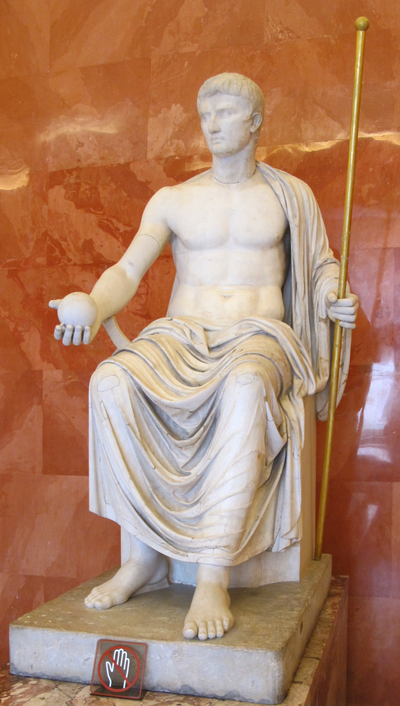
Otro retrato suyo: la escultura «Augusto de Prima Porta». El niño sobre el delfín es el signo de la casa imperial28, de la que procedían César y Augusto. Lleva la coraza de generalísimo, está descalzo, de pie en pose de orador, con cetro y bastón en la mano. Todo está claro. Se lee como una obra literaria.
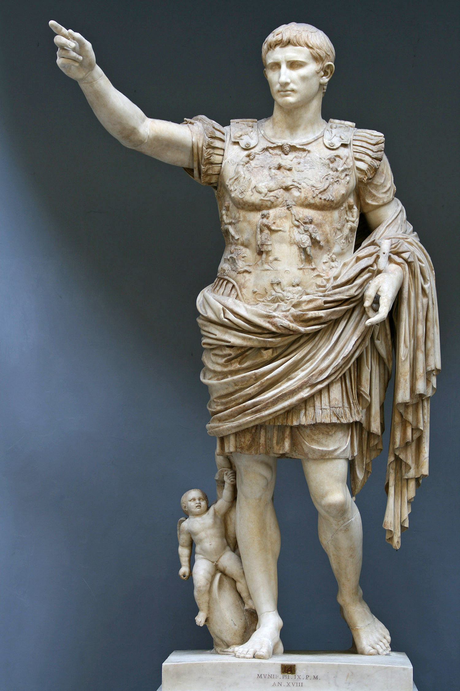
Volvemos al retrato de Rigaud. Detrás, sobre el cojín, está el orbe, solo con la cruz, porque los emperadores romanos eran tipos excelentes. Poseían todo el mundo. Sabían que la Victoria no puede estar sobre una esfera, por eso ya tienen la esfera, y sobre la mitad de la esfera la cruz. Es ya una soberanía a medias. Ropa clásica, forro de armiño en el manto. Semántica absoluta en el retrato.
Volvemos al retrato del mariscal Zhúkov. ¿Acaso no es un retrato semántico? Tiene la misma pose de la mano. Si el pintor hubiera querido representar al mariscal como personalidad, le habría quitado todos los signos semánticos y habría llevado el retrato por otro cauce.
O el retrato de Alejandro Nevski. El pintor no lo conoció personalmente, pero lo reproduce precisamente en los momentos en que hay que reproducir una idea determinada. Las líneas del horizonte están construidas bajas: él está por encima de las nubes, toda la tierra yace bajo él. Korin trabaja en el tiempo en que la afirmación del poder sobre el mundo era un problema muy grande. Modela ese problema tanto a través del mariscal Zhúkov como a través de su héroe preferido, Alejandro Nevski. Así que es un retrato-máscara. ¿Por qué decimos que es un retrato? Pues porque no es una imagen colectiva, porque aquí está representado un modelo conocido. Tanto en la casa de Korin como en todos sus álbumes encontrarán a la persona de la que pintó a Alejandro Nevski. Esa persona se convirtió en la máscara de Alejandro Nevski. Es decir, es una doble máscara: tanto porque esa persona se convirtió en Alejandro Nevski, como porque este retrato tiene signos semánticos.
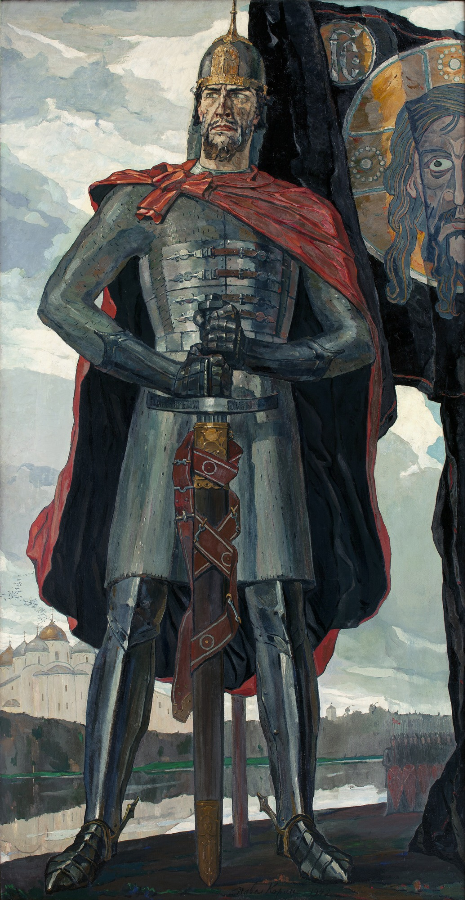
Si volvemos de nuevo a la máscara pura, veremos que está construida sobre la semántica de signos. Aquí no hay literalmente ni un solo elemento que sea casual en esta máscara, porque cuando el hombre se pone esta máscara, se convierte en señor de los elementos. En esta máscara hay una gran fuerza elemental. La cuestión es solo en qué tiempo se hace y qué escala de poder condiciona esta máscara. En el caso dado posee una fuerza universal. Ornamento, coloración de los labios, composición de agujeritos y aberturas, cantidad de líneas trazadas. Las partes frontales y temporales son el cielo, un tipo determinado de cabeza con globo ocular saliente. Es un retrato-máscara que posee poder cósmico. El retrato-máscara tiene determinados datos objetivos, indicadores. Está vinculado o bien directamente con el culto mágico del que se desarrolló la máscara, o bien con el tema del poder y la fuerza en el aspecto histórico. La máscara está vinculada con elementos semánticos exactamente establecidos en el arte. Las máscaras pueden ser sociales y de cualquier otro tipo. Pero obligatoriamente una cualidad: la personalidad es anónima, la personalidad está disuelta.
La máscara puede ser portadora de un nombre, pero en el cuadro vemos a una pastora. Otro ejemplo: el retrato de Rigaud, donde Luis está representado en calidad de poder. ¿Y acaso Napoleón no se representaba así? La máscara está vinculada con la imagen semántica del modelo, pero es mucho más amplia por sus cualidades. Además del signo de ocultamiento, disolución o anulación de la personalidad, la máscara tiene otra cualidad: el momento de la indiferencia emocional. Este momento es extraordinariamente importante, porque cualquier personalidad, cualquier acción está siempre coloreada por emociones; la acción en sí ya es emocional. Las máscaras funcionan con absoluta desconexión emocional. De los retratos de los que se habló más arriba, ¿hay al menos un cuadro emocional?
Hay también otros ejemplos. Louis David, «Napoleón en el paso de San Bernardo». Este cuadro se inserta naturalmente en toda la serie, solo que está hecho según el principio del monumento ecuestre romano. Así está representado el emperador romano Trajano a caballo.29 Nuestro Yuri Dolgoruki también está hecho según ese mismo principio: está sentado igual, solo con otra vestimenta. Es el emperador a caballo, los mismos signos semánticos.
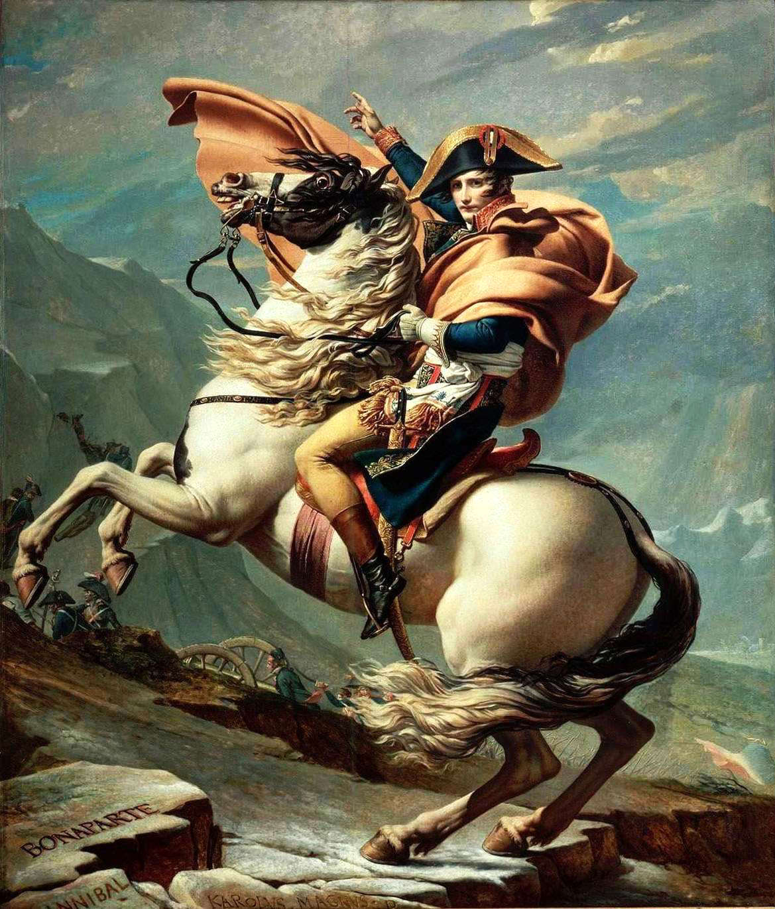
¿Acaso esta indiferencia emocional es propia de toda la obra de Louis David? No, a veces pintó retratos muy buenos. Pero en este caso creó un retrato-máscara. Es el retrato de una verdulera30, el retrato de una mujer que participó en la Gran Revolución Francesa burguesa. Un retrato tan semánticamente enmascarado que incluso está hecho en los colores de la bandera republicana francesa: azul, rojo y blanco. Con esto se subraya una vez más que ella es un representante, y su nombre está disuelto, no tiene importancia esencial.
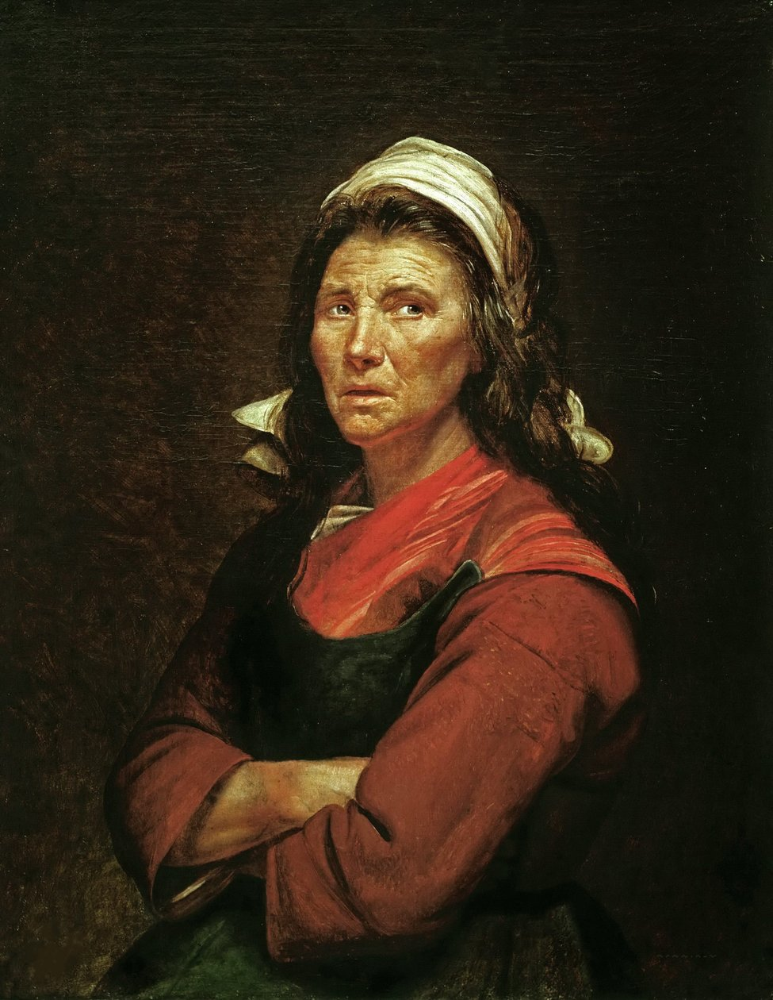
De nuevo Levitski: «Retrato de Úrsula Mniszech». Mostraba a Úrsula Mniszech como aristócrata, literalmente mostraba que en ella corre sangre azul. Si se examina este retrato de cerca, puede verse que mostraba en las sienes, en los huecos del pecho, en el mentón, en el cuello venas finísimas, más a ello cabellos cenicientos: en una palabra, aristócrata. Y allí ya quién es ella, Úrsula Mniszech o no, no importa.
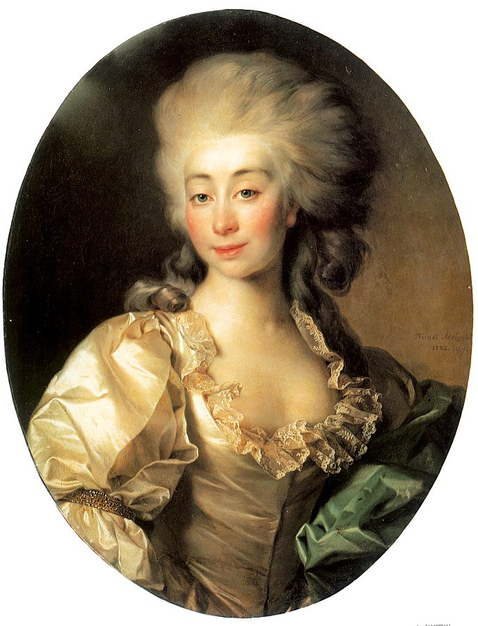
Y he aquí el retrato de la granjera de Picasso. Cosa paradójica, pero la diferencia no es grande. Es una dama conocida. Ahora se publican a menudo libros en los que en una página está el retrato y en la otra la fotografía. Estos libros tienen gran importancia: muestran a los espectadores que los pintores no inventaban nada de su cabeza y que no hay pintores que no trabajaran del natural. No hay pintor que no fuera realista, por eso mencionarlo sería inútil.
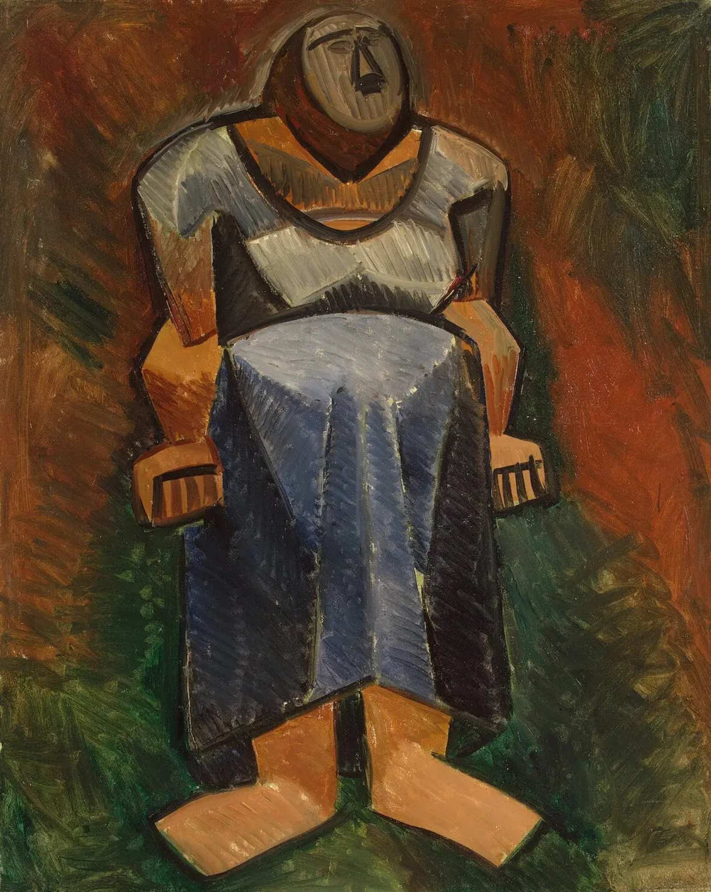
Este retrato de la granjera es muy complejo, incluso más complejo que el retrato de Úrsula Mniszech. En primer lugar, la granjera está tallada en madera, y no finamente pintada, como Úrsula Mniszech. Picasso subraya la cualidad de la madera como material del que está hecha. Imita la madera y las formas. En lugar de cabeza tiene un tocón, y sobre el tocón se ven huellas de formón o de pala. En lugar de nariz tiene un leño, y con el mismo formón están trazadas las pestañas y las cejas. Boca no tiene, pero eso no importa. Importa otra cosa: por un lado, es el prototipo de la clase campesina (ausencia de evolución, de mundo espiritual, ley de eterna sumisión, eterna reproducción de este tipo); por otro lado, sencillez, fuerza física, encanto. Ausencia absoluta de cualesquiera rasgos de individualidad. Pero también en Úrsula Mniszech hay muy pocos. Están infinitamente escondidos.
Uno de los creadores destacados de retratos-máscara31 fue Pieter Brueghel el Viejo. Es uno de los mejores maestros en este volumen del retrato. Las emociones o faltan por completo, o están embadurnadas, son primarias, es decir, existen solo como emociones fisiológicas. Hay una película absolutamente asombrosa de Alain Resnais, «Mi tío de América»32, que obligatoriamente deben ver todos los psicólogos. Está hecha especialmente para psicólogos. Toda esta película la conduce uno de los mayores psicólogos y psiquiatras del mundo. Simplemente lee una conferencia de psicología, y la película solo ilustra su conferencia. Este psicólogo se declara antifreudiano y antimarxista. Considera al hombre desde el punto de vista de toda clase de dependencias libidinales, psicóticas. Contando su método, dice que no considera a los cangrejos, porque los cangrejos son solo reproducción y absorción. Pues bien, Bruegel considera la reproducción y la absorción. Toma la máscara en el nivel más bajo. Va por la línea de los signos semánticos más rígidos. Y además esta rígida semántica de signos tiene una característica físico-psíquica. Da la dimensión más universal, casi hasta el horror cósmica, de la dispersión de estas máscaras.
El retrato-máscara comienza desde el momento de la formación del arte retratístico y llega hasta nuestros días. Pero tiene, sin embargo, determinantes externos: unidimensionalidad, estructura semántica, desconexión de la emoción y obligatoriamente un rasgo personal difuso o anónimo. Este retrato existe tanto tiempo como existe en general la imagen del hombre, si por retrato entendemos la imagen del hombre en el arte europeo.
Policleto tiene una compleja obra filosófica que se llama «Canon». Se reduce a que Policleto, que fue discípulo de Pitágoras y heredero directo de la escuela milesia33, tradujo el sistema pitagórico al lenguaje del arte y generalizó la experiencia que existía en la antigua Grecia, y también creó una cosa que es canon hasta el presente. Según este canon están hechas todas las esculturas europeas hasta el David de Miguel Ángel. La base de este canon consiste en su composición. Esta composición se llama «quiasmo». También este canon consiste en las proporciones que dan 1/634 de la relación de la cabeza con el cuerpo humano. Pero estos son solo los rasgos formales del canon.
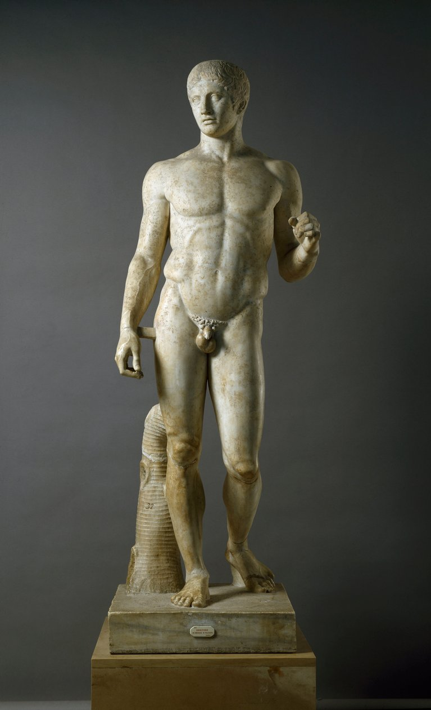
En esencia, el quiasmo es un concepto muy profundo, no solo estético, sino también ético, y además es un sistema espacio-temporal. Nunca pueden ustedes decir si el héroe está en movimiento o en estatismo, si esta figura pasa del movimiento al estatismo o del estatismo pasa al movimiento. Es decir, está captada la simultaneidad de la dinámica y la estática. No es el paso de uno a otro, sino que es simultáneamente movimiento y estatismo. ¿Cómo se llama la partícula que designa simultáneamente partícula y onda? Cuanto. El quiasmo equivale al concepto de cuanto en física, es el concepto de simultaneidad del movimiento y la estática.
Pero en el quiasmo hay aún una esencia más profunda, en todos sus elementos. Como base de medida se toma el dedo pulgar de la mano derecha del hombre. Se dispone un número determinado de veces en la cabeza, luego la medida de la cabeza se dispone en el torso. La pata del compás se coloca en el ombligo, traza un círculo; los brazos, dispuestos de un modo determinado, dan un cuadrado. Este sistema da la proporción áurea ideal, calculada por Pitágoras, repetida por los artistas del Renacimiento. Es una ley que existe objetivamente en la naturaleza. Es la ley descubierta y formulada por Pitágoras como filósofo y teórico, y por Policleto de Argos como filósofo y escultor. Es una ley que hasta ahora no está sujeta a revisión, como las leyes de Newton. En el momento actual la escuela humana las usa constantemente.
En esta ley está contenida la respuesta a la pregunta de por qué un pequeño país del Mediterráneo, que no tuvo un Estado común, que nunca dejó de guerrear (¿cuándo fue eso, que los griegos no guerrearan o con alguien o entre sí?), que no tuvo una dirección política única (Esparta era una unión aristocrática esclavista, Atenas una potencia comercial marítima esclavista, Tebas agrícola), creó una cultura que influye en el arte y la ciencia europeos hasta nuestros días. Existieron, si se «rasca» mucho, 500 años y desaparecieron como un instante maravilloso. Y su arte hasta hoy sirve al mundo entero. ¡He ahí el enigma!
El caso es que uno de los problemas centrales de la cultura, que hasta hoy sirve al mundo, es el problema de la proporción áurea. Es una ley objetiva, descubierta por los griegos. Por eso para nosotros es muy importante este artista. Ven ustedes cuántos caminos se cruzan en esta figura. El quiasmo presupone no solo un tipo determinado de composición, de simultaneidad de movimiento y estatismo, presupone además un momento muy complejo, que es propio de los griegos desde el principio.
La cultura del antiguo Oriente, a la que pertenecen los Estados de Mesopotamia y Egipto, es una cultura-ornamento, cultura simétrica. La ley principal de la cultura de los Estados de Mesopotamia y Egipto es la ley de simetría, la ley de inmovilidad, la ley de ritualidad, la ley de la máscara ritual. Esta simetría es siempre estática y abstracción. Es el arte de las máscaras ideales. El arte del movimiento es el arte de las relaciones, de las interconexiones. El arte antiguo reproduce a la vez dos sistemas: el constante, como la personalidad con su estática simétrica ornamental, y la gran fuerza del movimiento dialéctico de Europa. La ley de la conexión y la ley de la disgregación o asimilación del espacio. Egipto como cultura existe fuera del tiempo y del espacio. Y en la antigua Grecia existen simultáneamente dos grandes leyes, dos sistemas distintos.
Durante mucho tiempo, al considerar el quiasmo antiguo, los estudiosos notaban la siguiente circunstancia: a todas las esculturas antiguas se les caen las cabezas35, han llegado hasta nosotros sin cabeza. ¿Por qué ocurre esto? Porque estaban enamorados del cuerpo humano, de su movimiento, de su musculatura, y la cabeza era necesaria como balance, como añadido; en ella no hay nada.
Es difícil estar de acuerdo con esta afirmación. La cabeza para la escultura antigua es no menos significativa que todo lo demás. Es nuestra mayor desgracia que recibimos la Antigüedad en ruinas, en fragmentos, porque entra en la ley única del quiasmo. Todas estas cabezas antiguas son extraordinariamente ricas en contenido, como todo el sistema del quiasmo.
Todas ellas, como la sección del quiasmo y la proporción áurea, y el cuadrado, y el círculo a la vez. Es decir, ese mismo cuanto: partícula y onda. Son un sistema de introversión —inmersión profunda en sí mismo— y al mismo tiempo son un sistema de extraversión —salida de sí mismo—. Aquí incluso en las expresiones de los rostros hay extraversión volitiva e introversión filosófica melancólica. En estas cabezas y rostros antiguos existe la razón. La orientación de la cabeza, un escorzo determinado, el movimiento de la mano… y junto con ello la absoluta inmersión en sí mismo. Carga emocional simultánea hacia dentro y hacia fuera. Estas cabezas representan un espejo psicológico colectivo del mundo helénico. Precisamente el retrato antiguo da siempre, a través de un héroe, el retrato colectivo de la integridad del mundo: espiritual, y no poética. El hombre debe ser fuerte, valiente, debe estar constituido de tal modo que el dedo pulgar de su mano quepa tres veces en su cabeza, que el cuerpo sea blanco y los ojos azules36, que no cojee. En las olimpiadas y certámenes de efebos Grecia se contemplaba a sí misma en un espejo colectivo ideal. Los héroes de la olimpiada son los héroes de toda Grecia.
Tal es la escultura «El auriga de Delfos». Estas estatuas tienen rostros idénticos: él representa a toda Grecia, y toda Grecia está representada por él. Es un retrato colectivo de la masa.
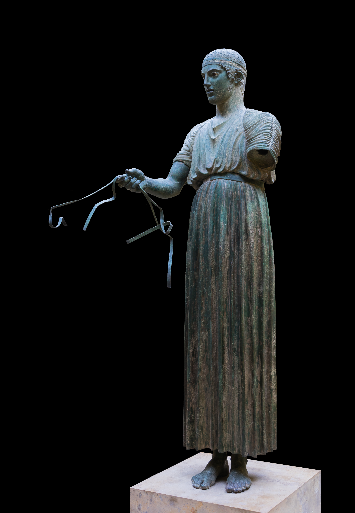
A comienzos del siglo XX, una cosa como el retrato de la granjera de Picasso no es en absoluto casual, porque el siglo XX comienza a volver en su conciencia a su origen, al colectivismo psicológico. El mayor filósofo y teórico, creador de todo el diseño contemporáneo, que construyó —él solo para todo el siglo XX— la teoría de la percepción visual, Malévich dijo: «El siglo XX es el siglo de la conciencia de masas.37 Rembrandt es un pintor genial, pero el arte pertenecerá a las masas».
El comienzo del siglo XX tiene una importancia colosal. En el retrato de la granjera Picasso representa la conciencia colectiva. El siglo XX vuelve al retrato-máscara a través de todos sus caminos. Lo vemos en los cuadros de Pirosmani, en los cuadros de Goncharova, en las obras de Roerich. El gran fundador de esta corriente es Paul Gauguin, que reproduce la idea del arte antiguo. Puede parecer que los héroes de Pirosmani o de Picasso tienen una nota burlona, pero eso no ocurre, el pintor no puede burlarse. Conscientemente no lo hace. En el arte esto se llama ironía objetiva. Y la ironía subjetiva en el arte no existe.
Paul Gauguin fue uno de los hombres más interesantes del siglo XX, porque resucita ese retrato colectivo ideal eufórico. El mundo a través de un hombre y un hombre a través de todos. Es el retrato de un colectivo homogéneo en lo emocional y en todos los demás sentidos. Es representante de esa misma masa estereotipo; a través de él se ven muchos, porque el retrato antiguo también existe solo con signo «más». El héroe mitológico antiguo es un ejemplo. Y la masa estereotipada de Gauguin también es un ejemplo ideal, positivo, espejo del retrato psicológico colectivo. Paul Gauguin a través de ella nos muestra la Europa corrompida y desmoronada.
Si alguien de los pintores se distinguió por la malicia, ese fue Toulouse-Lautrec, y no Picasso. Era aristócrata, trataba a las personas como insectos, por eso no le daba miedo entrar en cualquier situación en el arte. Nunca se identificó con el mundo que pintaba, sino que se ponía por encima de él. Toulouse-Lautrec nació pintor genial y lo llegó a ser. Era un hombre sin complejos. Fue una personalidad muy interesante.
Y Toulouse-Lautrec también mostró el colectivo. Fue uno de los primeros que sustituyó el tipo por el estereotipo. Abrigo, sombrero, desapego, gran ciudad, personas de espaldas unas a otras, cada uno sumido en sí mismo. Diferenciación e integración. De nuevo el retorno a la máscara, pero no a la máscara que domina el mundo, sino a la máscara que se domina a sí misma.
Así pues, ¿qué es el retrato-máscara? Puede ser tanto simplemente la imagen de una persona dada (por ejemplo, el grupo de retratos de Levitski) como el retrato de un colectivo. También puede ser un retrato colectivo dado a través de una persona. Pero la cuestión no está en si es el retrato de una persona o de todo un colectivo, sino en que el retrato-máscara se caracteriza por rasgos completamente determinados, independientemente de si es el retrato de Levitski o el retrato del mariscal Zhúkov hecho por Korin. El retrato-máscara se caracteriza siempre por rasgos muy precisos. Es siempre una personalidad socialmente adaptada, es decir, entre su signo social y su signo personal puede ponerse un signo de igualdad. El primer rasgo del retrato-máscara es la absoluta programaticidad social.
El psicologismo del retrato es la plena adaptación en una estructura social determinada. Es decir, al signo social le corresponde precisamente la psicología del hombre o su conducta psicológica. Es un retrato extremadamente compactado en ese sentido. Tales máscaras sociales ocupan literalmente el 80% del espacio del retrato. Es precisamente la característica social, la característica del principio material. Es la dominante, la principal. Por extraño que parezca, la profunda adaptación psicológica social es un estereotipo, por eso el colectivo podemos llamarlo retrato. Este retrato posee siempre los mismos rasgos. Tiene tan identificados los requerimientos psicológicos internos que el retrato posee los mismos rasgos.
Estas imágenes de máscara son extraordinariamente diversas, y lo principal es que están «untadas» por toda la historia del arte con una uniformidad aproximadamente igual. Lo dicho no significa que sean malos retratos. Entre los maestros de este retrato hubo pintores de primera clase. Por ejemplo, Anton van Dyck, típico maestro del retrato-máscara, ¡y qué virtuoso era! Simplemente su tarea era precisamente esa.
¿Dónde termina la frontera del retrato-máscara y comienza otro retrato? ¿Puede un mismo pintor trabajar en tareas distintas? Sí y no.
Hay pintores que trabajan toda la vida en un mismo plano, en un mismo sistema de tareas, por ejemplo Levitski. Y hay pintores que hacían tanto el retrato-máscara como retratos de otro tipo. Eso ya depende de las posibilidades del pintor.
El retrato-máscara es el primero de los tres tipos de retrato. Los otros dos tipos son el retrato-carácter y el retrato como esencia espiritual de la persona representada.
¿Cuáles son las posibilidades del pintor en el trabajo sobre el retrato? Existe una frontera muy esencial entre el retrato-máscara y el retrato de otro tipo; a veces un mismo pintor trabaja en ambos. Y a veces sus mismos personajes aparecen tanto en forma de máscara como en forma de retrato-carácter.
Ya recordamos dos retratos de Vollard de Picasso. Es muy interesante el retrato de Vollard «en el estilo de Ingres». Ya el propio título de este retrato dice que el pintor lo somete a un cierto patrón. Y como Ingres era un típico pintor del retrato-máscara, nos dejó la serie balzaquiana: todas esas damas imperio, los Rothschild. Picasso muestra a Vollard no como Vollard, sino bajo la máscara de la respetabilidad burguesa. En él todo está determinado por ese carácter: el que sea de cuerpo entero, el que se siente en tal silla, el interior, y esa pose de recogimiento, de cerrazón, el candado de las manos, como si conversara con un interlocutor. El chaleco abrochado hasta el último botón. Esto corresponde muy exactamente al candado de esas manos. Picasso lo pinta con un traje que en aquellos tiempos prácticamente nadie llevaba: cuello alto y corbata ajustada al cuello; eso lo llevaba la burguesía aristocráticamente conservadora.
Y he aquí un retrato completamente distinto de Vollard, un retrato de época más temprana, con una característica completamente distinta. Está ejecutado en la manera cubista. El propio cubismo es el lenguaje más expresivo para esa tarea. Trata a Vollard como una figura trágica, da un indicio de un movimiento muy grande. Al mismo tiempo hay detalles interesantes: el interior introducido dentro, algunas escaleras, fragmentos de periódicos. Es decir, algunos elementos del mundo interior entran en contacto con elementos externos introducidos dentro. Es un sistema de vivencias, un rostro completamente deformado, combustión interior, pasión, movimiento interior.
Desde el momento en que el pintor da en el retrato un sistema dinámico, sustituyendo con esa dinámica la estática compositiva, la estática emocional, desde ese momento comienza el salto a otro sistema de relaciones entre el retrato y el modelo.
La estática es uno de los rasgos más característicos del retrato-máscara, ante todo porque en la máscara misma no puede haber movimiento. Está excluido. Si la máscara comienza a moverse, deja de ser máscara. Por eso el momento de transición del retrato-máscara al retrato de otro tipo yace en el ámbito dialéctico: en el ámbito del movimiento, en el ámbito de la dinámica. Y esa dinámica es el lenguaje que transmite algo que es una tarea mucho más compleja en el retrato que la simple imagen del retrato-máscara.
Uno de los rasgos del retrato-máscara consiste en la indiferencia emocional. Son siempre retratos absolutamente privados de cualquier medio o esfera emocional. Son retratos en los que faltan las emociones. Los retratos del otro grupo son retratos de signo emocional. Y el signo emocional y el sistema dinámico están siempre muy vinculados entre sí.
Todo el sistema emocional del hombre aparece bastante tarde. Podemos palpar este tema de los signos emocionales en la literatura y el arte no antes del siglo XVI. A partir de Cervantes y Shakespeare, a partir del retrato del Renacimiento italiano tardío, podemos comenzar la cuenta del retrato de otro tipo.
Si en la literatura los primeros nombres que debemos nombrar son Shakespeare y Cervantes, en la pintura los primeros nombres que debemos nombrar son el español José de Ribera y Tiziano.
Es muy interesante que los retratos de Tiziano son dobles. Cuando Tiziano pinta retratos femeninos, todos esos retratos van bajo el mismo signo: el signo del Renacimiento: la imagen de la bella dama, el culto de la bella dama, la imagen del amor terrenal y celestial. El objeto principal de la imagen es la bella dama, que es muy compleja funcionalmente. Es ante todo Beatriz, que hasta cierto momento sustituye a Virgilio y que es conductora de la luz. Es el amor celestial, es la llave con la que se abre la creación y el verdadero conocimiento. Son magníficas bellas damas, a las que llaman Venus, son las imágenes principales de la época del Renacimiento.
Tanto en Filippino Lippi como en Botticelli es absolutamente igual. En Botticelli la mujer viva se endurece hasta convertirse en máscara, se convierte en la máscara ideal de la época del Renacimiento. Los espectadores de la Galería de Dresde preguntan a menudo: ¿por qué en una parte de la sala todas las mujeres son Venus, y en otra Saskias? Es decir, se ha hecho una observación muy certera: que todas las mujeres cumplen la misma función, son portadoras de un mismo pensamiento.
Tiziano en esencia no se aparta de esta tradición. En él, en el retrato femenino, se conserva la adherencia a una determinada actitud hacia la máscara femenina que da la época del Renacimiento. Tiziano fue un pintor magnífico. Pero el caso es que cuando Tiziano pinta un retrato femenino, el rostro de la mujer se endurece en forma de máscara. Por eso todas las mujeres de Tiziano son semejantes a Lavinia. Y a través de Lavinia se realiza ese ideal.
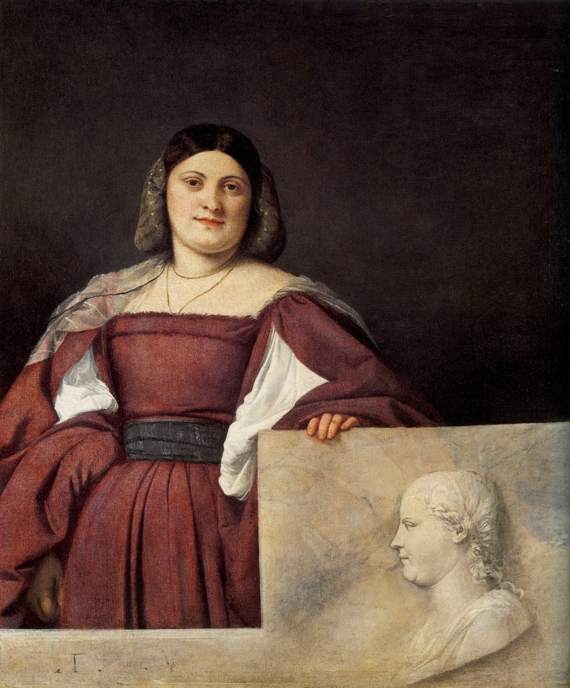

Por ejemplo, Lavinia como Venus: es un ideal determinado, un estereotipo determinado, el patrón de la belleza femenina según las representaciones venecianas. Corpulencia, cabellos blancos: todo eso lo da Tiziano en sus retratos, que están sometidos a la imagen de Lavinia.
En cuanto al retrato masculino, aquí todo es distinto. Tiziano da un retrato de tipo completamente distinto. Hubo dos pintores así que dan un nuevo tipo de este retrato: Tiziano y José de Ribera. ¿En qué consiste esa otra característica del retrato?
Consiste ante todo en la suposición de una cierta ambigüedad de la personalidad dada, en la ausencia de ese tipo psicológico plano, ideal, socialmente adaptado, en un cierto conflicto profundo que lleva en sí cada hombre. En cuanto comienza ese conflicto, esa incompatibilidad trágica, cuando los pies se hunden en el pantano y las alas tiran hacia arriba, en cuanto comienza el conflicto entre la respetabilidad ideal, la organización social ideal y el desorden, el vacío interior, la falta de plenitud (o, al contrario, las pasiones que desgarran el alma), el hombre se sale de su nicho social. Ese conflicto interior plantea inmediatamente la cuestión de otro modo.
Volvamos de nuevo al retrato de Ippolito Riminaldi. Es una personalidad muy conocida, abogado veneciano, vestido con un hermoso abrigo de pieles, con una gran cadena de abogado. Ippolito Riminaldi ocupa casi todo el espacio del retrato, toda la atención está dirigida precisamente a él. El foco está en él, faltan cualesquiera detalles, elementos de interior. Es el momento introducido por Tiziano: toda la atención se concentra en una persona, se eliminan todos los detalles. Tiziano es también el primero que, comprendiendo profundamente su tarea, nivela en general el color, comienza a trabajar monocromáticamente. Comienza a usar no la saturación cromática que llena uniformemente el espacio del cuadro, sino la lumínica. Y esa destacación lumínica del rostro y de la mano es dada por primera vez en el arte por Tiziano.
Ippolito Riminaldi se presenta ante nosotros como un magnífico patricio veneciano. Camina como caminaban todos ellos, es decir, su conducta externa es estereotipada. Y caminaban precisamente así, con el brazo echado hacia un lado. Es un gesto muy expresivo: es autoafirmativo, hay en él un cierto desafío. El retrato es frontal, de frente. Tiziano da el retrato de un noble de su tiempo con tales atributos.
Al mismo tiempo, cuando miramos con mucha atención el rostro de Ippolito Riminaldi, el signo cambia. Uno de los investigadores de la obra de Tiziano, Hippolyte Taine, tenía la idea de buscar prototipos de Shakespeare en los retratos de Tiziano. No era una idea tonta, y «Retrato de joven con guante» lo llamó retrato de Romeo, lo que no carece de sentido. Allí están dadas todas las características de Romeo. Y el retrato de Ippolito Riminaldi Taine lo llamó retrato de Hamlet. Tan alto valoraba las notas dramáticas que viven en el espacio interior de ese modelo.
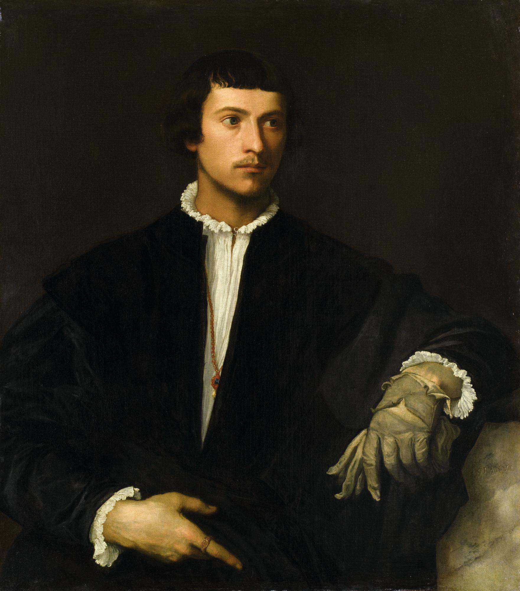
Sin embargo, difícilmente puede llamarse a este cuadro retrato de Hamlet. La madre de Hamlet decía que su hijo era «grueso y jadeante», y él mismo decía lo mismo de sí. Hamlet se distinguía por cualidades externas nada ricas: grueso y jadeante. Pero Ippolito Riminaldi es simplemente un bello de pura cepa, y no era ningún Hamlet.
Aquí hay un momento de no coincidencia consigo mismo. Es un malestar anímico, una trágica no coincidencia del propio «yo» y de la función que hay que llevar. En Shakespeare hay tanto rostros como retratos-máscara. Tiene un magnífico conjunto de retratos-máscara, retratos-carácter, que caracterizó con una sola palabra. El carácter se pone en marcha por el momento de la pasión; en la base del carácter yace la pasión, pasión irresistible, que es más fuerte que el hombre, más fuerte que todos sus deseos, sus impulsos. No puede hacer nada consigo mismo.
Los primeros retratos de este tipo son así. Lev Gumiliov llamó con extraordinaria precisión a este tipo de personalidad: pasionaria. Y cuando se habla del retrato-carácter o del retrato-personalidad, se tiene en cuenta el retrato de signo pasionario, es decir, el retrato apasionado. La personalidad de tipo pasionario pierde el sentido de autoconservación, porque esa llave con la que se da cuerda a esta personalidad es más fuerte que cualquier sentido de autoconservación. Es una temeridad, porque los marcos protectores están levantados. Y esos marcos funcionan en primer lugar en la máscara.
Gumiliov observa que la personalidad pasionaria no es en absoluto positiva, sino las más de las veces negativa, porque la pasión suele ser destructiva no solo para la personalidad, sino también para el entorno, para otras personas. Por eso las personalidades pasionarias son un pueblo abigarrado, sometido a las pasiones humanas. Este mundo en la literatura está representado mucho más brillantemente que en el arte. En el arte es más fácil mostrar la máscara, porque el arte no trabaja en el sistema del tiempo, sino que trabaja solo en el sistema de lo unidimensional. Tiene todos los elementos del carácter pasionario, pero el carácter pasionario rompe el espacio. Gumiliov se pregunta: ¿qué necesitaba Alejandro Magno? Ya lo tenía todo. Pero no, recordó que en algún tiempo muy remoto los persas ofendieron a los griegos. Los griegos ya habían olvidado esa ofensa, no querían guerrear en absoluto. Y Gumiliov dice: estas personas no son necesarias para la sociedad. Y vemos que realmente no son necesarias para ella. Recordemos la Holanda de Rembrandt. ¿Era necesario Rembrandt para la sociedad? No, no era necesario para nadie. Lo mismo con Alejandro Magno. Era una personalidad pasionaria. La esencia de la personalidad pasionaria no solo está en que se da cuerda a sí misma, sino también en que cambia las agujas de la historia.
«La boyarda Morózova» de Surikov es un retrato de tipo completamente distinto. Claro que Surikov no sabía nada del descubrimiento de Gumiliov. Pero precisamente ese tipo de personalidad representa en su cuadro «La boyarda Morózova», precisamente ese tipo de personalidad representa en el cuadro «Ménshikov en Beriózovo». Es difícil decir quién fue mejor retratista: Surikov o Anton van Dyck. ¿Y en qué balanzas puede pesarse eso? Pero está completamente claro que Anton van Dyck representaba un tipo de personalidad en un espacio espiritual, y Surikov en otro, y precisamente en aquel donde se adelantan los relojes de la historia, donde se produce la mayor fractura del espacio histórico y del medio geográfico. ¿Y qué necesitaba en fin de cuentas la boyarda Morózova? Pero ella no se apaciguaba. Surikov capta lo principal en su imagen: en el cuadro mismo, que es un retrato colectivo de aquel tiempo, no da una actitud unívoca hacia la personalidad pasionaria. Capta lo principal en su imagen. En torno a ella hay dos o tres personas que simpatizan o compadecen con las entrañas, y en lo fundamental es una muchedumbre densa e indiferente, a la que ella, en realidad, no le hace falta. Surikov subraya la afluencia de lo pasionario, pero absolutamente orientado a un fin, creador y destructor, que forma la personalidad humana irrepetible, incómoda para la sociedad, muy a menudo pereciente, que no realiza sus sueños. Sobre todo hay que señalar que la boyarda Morózova tuvo mucha suerte: hemos recordado su nombre, movió las agujas de su reloj con mucho acierto. Tales personas para los que los rodean, para los contemporáneos, son locos.
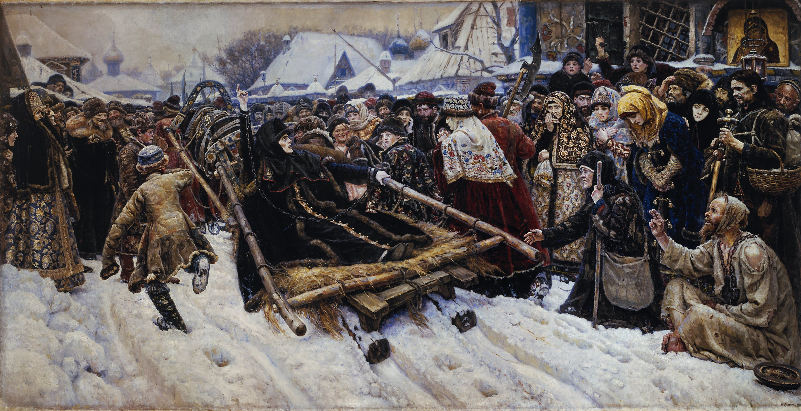
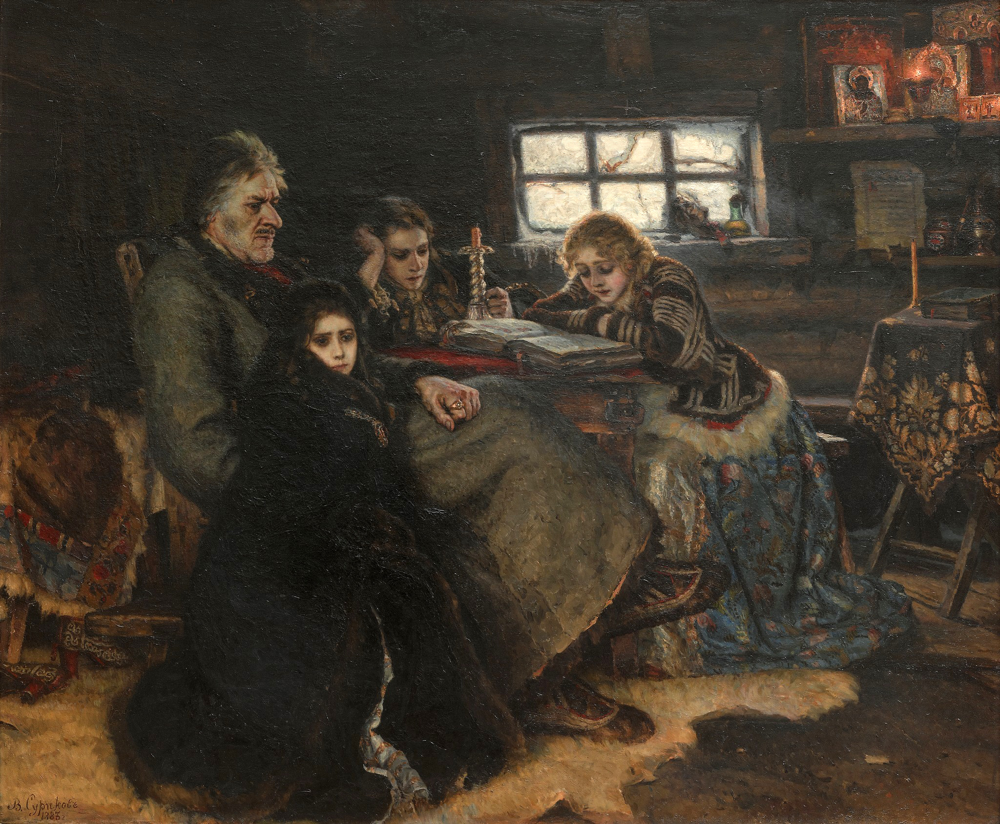
En ese sentido es muy acertado el retrato de Músorgski pintado por Repin. Repin es un pintor complejo y valorado con mucho menos acierto del que merece. En primer lugar, lo han besado hasta tal punto que ya no está claro qué podía y qué no podía. Como escribió en su día Maximilian Voloshin, hay dos tipos de muerte: la muerte por aniquilación y la muerte por canonización. Pues bien, Repin prefirió la muerte por canonización, y como pintor era variado y muy complejo.
Fue uno de los pocos pintores que supieron crear un tipo de personalidad en el arte. El retrato de Músorgski está muy mal pintado. Si uno va a la Galería Tretiakov y comienza a mirar con atención, verá que este retrato, desde el punto de vista de la pintura, está pintado bastante mal. Se divide en dos partes: la pintura de la cabeza y la pintura de la figura. En principio está concebido de un modo asombroso: el retrato de Músorgski en bata, en camisa. No hay ninguna máscara. Esa bata, la barba despeinada: todos los signos de abandono externo, que en el retrato-máscara no pueden existir. En este caso esto caracteriza la absoluta descomposición de Músorgski. En bata de hospital: un hombre loco. Y además siempre llaman la atención sobre su nariz roja. Es la personalidad de Músorgski. Como dicen los alcohólicos para consolarse, el encanto no se pierde bebiendo. Pero tampoco esa plenitud de personalidad, de talento, se pierde bebiendo. El talento de todos modos permanece, vive, late, existe, y la envoltura se destruye.
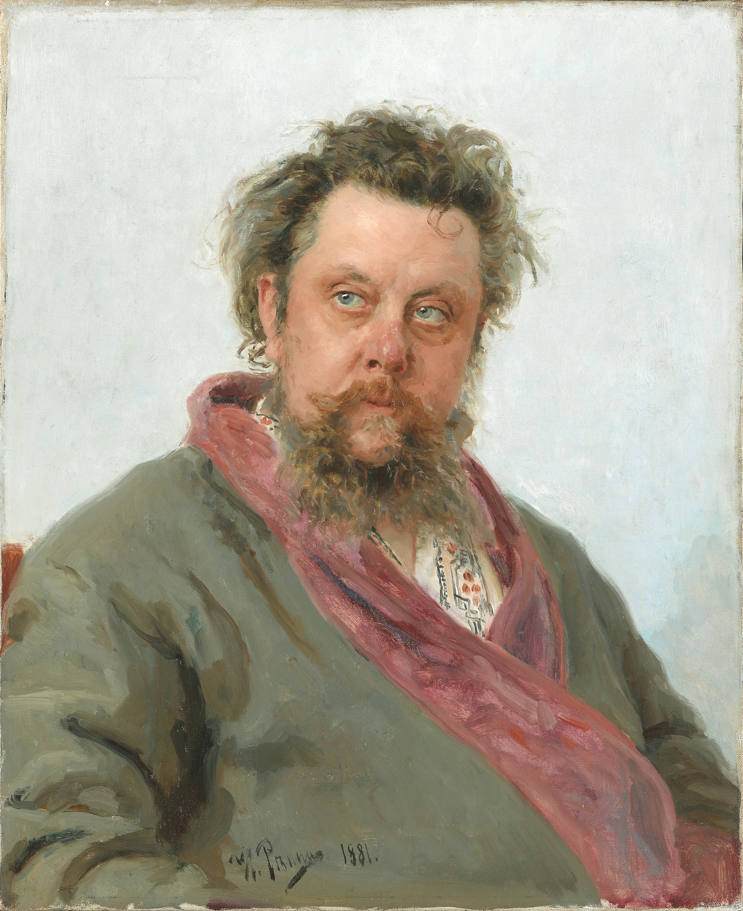
Hay sistemas completamente monolíticos, y hay sistemas escindidos, como, por ejemplo, en el retrato de Ippolito Riminaldi: escisión entre el noble veneciano y el alma conturbada. En Músorgski el alma aún está viva, aún oye los sonidos divinos, y la envoltura ya se descompone, se destruye. Es el movimiento hacia la perdición. Los retratos-carácter son muy complejos por su estructura, por su esencia, pero poseen, como los retratos-máscara, características completamente determinadas.
En los orígenes de los retratos pasionarios están dos pintores: Tiziano y José de Ribera. Aquí hay que hacer una observación: si el retrato-máscara no es personal, sino estereotipado, el retrato personal, característico, construido sobre la ruptura con la máscara, está creado sobre la actividad psíquica y social irrepetible de la personalidad. El autor que él mismo no posee todos estos datos no puede crear esa imagen, porque ningún pintor puede crear lo que él mismo no ha vivido. Debe estar por encima de lo que debe hacer. Debe dominarlo todo. Y si ha dominado el material y puede usarlo, entonces puede crear. El arte es dominio, conciencia, comprensión. El pintor debe estar siempre por encima del material.
Para operar con las cuatro reglas de la aritmética hay que sabérselas de memoria. Para pintar una máscara hay que ser consciente de ella. El pintor debe conocer ese material. Y para crear un retrato-personalidad, el autor debe haber vivido ya esa pasión. Si no está vivida, resulta la mentira, que siempre se ve.
Por eso muy a menudo la obra de este tipo es autorretratística o autobiográfica. Es simplemente asombroso: qué mundo debía llevar en sí Thomas Mann si escribió una obra tan notable. Tenía que haber vivido la vida de sus héroes. ¿En qué nivel debe estar el escritor para escribir la novela «Doctor Fausto»? ¿Cómo debía ser Leonardo da Vinci si pintó «La Gioconda»? Debe estar por encima de todo eso.
Por eso una enorme cantidad de retratos de tipo pasionario son profundamente autobiográficos, es decir, llevan en sí elementos de esa pasión vivida por su autor, de ese fuego por el que él también está quemado. José de Ribera fue un retratista asombroso. A las mujeres las pintaba de su hija. Era extraordinariamente bella y tierna, y a todos los santos les daba sus rasgos. Y las imágenes masculinas muy a menudo las llenaba de sí mismo, de su asombrosa pasión interior, de su combustión interior. ¡Qué aspiración a la verdad hay que tener para, siendo pintor cortesano, tomar en las manos el farol de Diógenes y llamar a su autorretrato «Diógenes»! Los Diógenes no tienen lugar en la sociedad. Y los bienes que la sociedad les da son absolutamente insignificantes para ellos.
La personalidad existe obligatoriamente en varias dimensiones del mundo. Por eso Thomas Mann escribía: «Aceptaré la condecoración sin torcer el gesto». Porque los lectores y espectadores no pueden imaginarse los sufrimientos y pasiones por los que pasan los escritores. Respecto a la tragedia que vivimos, esa orden es nada; estamos condenados a la coparticipación en ese mundo trágico. Los retratos de tipo pasionario (retratos-personalidad, retratos-carácter), además de los elementos enumerados, contienen obligatoriamente en sí la coparticipación en el mundo de lo trágico.
En ese sentido es muy interesante nuestro pintor ruso Vrúbel. Su personalidad y su obra coincidieron extraordinariamente entre sí. En la base de su obra yacen reflejos asombrosamente profundos. El mundo interior de Vrúbel es en sí muy ambiguo, muy complejo, como todos sus cuadros, semejante a un mosaico multicolor, muy tierno, asombrosamente ahumado, fantástico, como en el retrato de su esposa Zabela-Vrúbel, cuando la pinta como la Princesa Cisne. Sobre las plumas de ese pájaro yace un cierto reflejo rosado. Vrúbel es un pintor cuya alma era extraordinariamente tierna, era como un niño. Como personalidad era receptivo, vulnerable, tierno, infinitamente frágil y al mismo tiempo infinitamente solitario, muy trágico. Pero supo no disolverse en eso, sino hacerlo objeto de investigación. He ahí su gran mérito. Por eso pinta de un modo tan convincente el retrato de Mamontov. Estas cosas son muy profundamente personales. La personalidad de Vrúbel tiene aquí gran importancia, pero su fuerza como retratista consiste en que él mismo se hace objeto de investigación, él mismo se pinta, observando su enfermedad, observando su mundo interior. Considera su mundo interior saliendo de él y haciéndolo objeto de su propia creación.
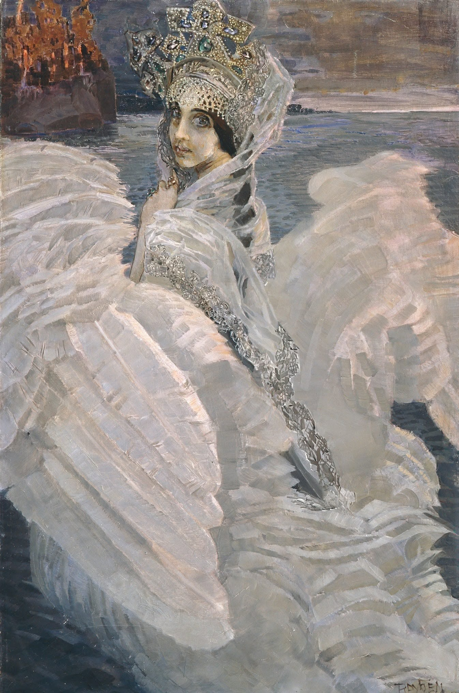
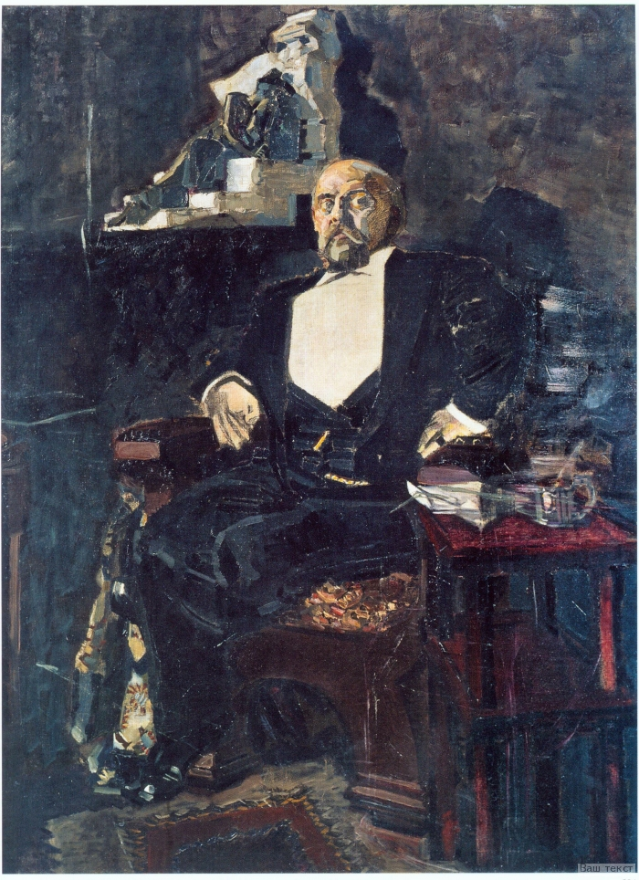
Esto no puede decirse ni mucho menos de todos los pintores. Si se mira con atención la fotografía de Vrúbel, la fotografía de perfil, de frente, tiene un rostro muy, muy tierno. Pero en principio incluso al Demonio le da rasgos de semejanza consigo mismo: párpados pesados, ojos azules, nariz, mejillas hundidas, parte inferior del rostro muy alargada. Era frágil, de baja estatura, y al Demonio lo hizo con una fuerza miguelangelesca.
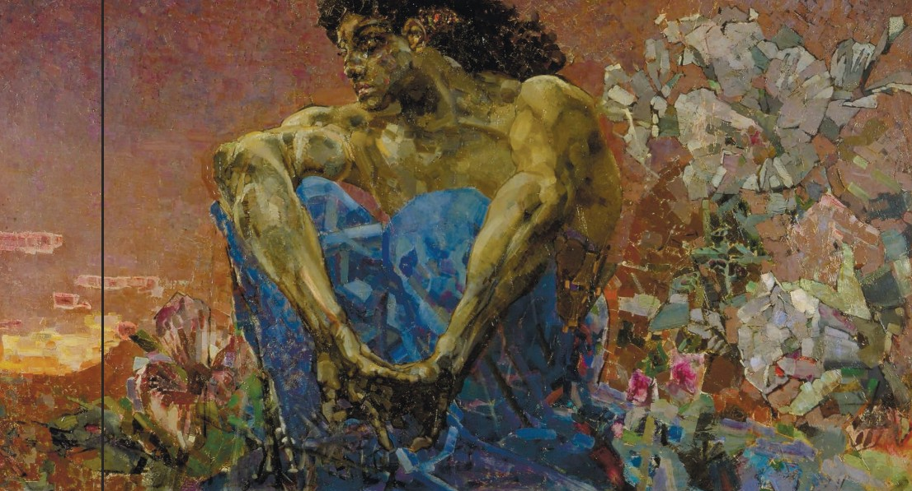
El tema de la soledad, de la soledad por la imposibilidad de encontrar un lenguaje común con el mundo, el problema de las enfermedades anímicas en ese tipo de personas es una cuestión muy compleja. La medicina y el arte aquí divergen exactamente en los diagnósticos. Desde el punto de vista de la medicina son personas enfermas, y desde el punto de vista del arte son las más sanas de todas las que pueden ser, porque tienen extraordinariamente desarrollados los reflejos y la capacidad de analizar la experiencia de sus propios sufrimientos, de sus propias pasiones.
Las figuras más consecuentes y profundas fueron varios pintores: Durero, Rembrandt y Velázquez.
Comencemos con Rembrandt. La evidencia de este ejemplo es asombrosa. Es el ejemplo del contraste entre el estereotipo ideal, el retrato-máscara, que crea la estilística holandesa del siglo XVII, y la obra de Rembrandt.
El arte holandés es el arte del tipo psicológico socialmente adaptado, es el arte en el que literalmente no ocurre nada: no hay tormenta, no hay lluvia, no hay muertes, no hay sufrimientos. Es algo extremadamente equilibrado, ideal, literalmente dormido. Hay en él estabilidad emocional, armonía entre el hombre y el mundo. Por eso los holandeses aman mucho dar sus retratos en el interior, y entre el interior y el hombre existe un signo de igualdad. Entre el hombre y las cosas existe un programa ideal de equilibrio. Y si aplicamos la terminología cinematográfica, el arte de los pequeños holandeses es el arte de los planos medios. Afirma una cierta semejanza colectiva, comunidad, todo un colectivo de igualmente vestidos, igualmente vivenciadores. Este arte establece un cierto estándar de vida, estándar de pensamiento, estándar de vivencia, estándar de necesidades estéticas, de necesidades espirituales. Claro que para este arte Rembrandt era una carga desmesuradamente pesada.
Vemos cuán duro le resulta a una personalidad de tal tipo en un sistema de valores artísticos absolutamente unificados. Holanda fue el primer país que creó una unión de pintores.38 Se llamaba Unión de San Lucas. Las leyes de esta unión eran tan rígidas que quien pintaba un bodegón o un patinaje sobre hielo no tomaba ningún otro tema, porque ya era especialista en ese tema, y lo reproducía según determinados estándares.
Los holandeses eran maestros completamente magníficos, pintores magníficos, pero ahora se trata de otra cosa: del lado psicológico. Una personalidad del tipo de Rembrandt simplemente hace explosionar ese espacio. Si los griegos decían que no habrían soportado dos Octavianos, los holandeses no habrían soportado dos Rembrandt.
Un conocido director de cine hizo sobre Rembrandt una película demoledora.39 Intentó introducirlo en el canon general, en el estándar general. Rembrandt está presentado como una personalidad profundamente inmoral y amoral; en eso se hace el acento principal de la película. La mentira sobre Rembrandt continúa hasta hoy: hasta tal punto no cabe en los marcos y estándares aceptados.
No es casual que escriba tal cantidad de autorretratos. No es porque no tuviera modelos, sino porque en general le daba igual a quién pintar. Pinta al hombre de todos los tiempos. Incluye en el hombre muchas cualidades que no están vinculadas a la Holanda de aquel tiempo, no están vinculadas al círculo de cultura dentro del cual vive. Vive en otro espacio y tiempo. Es el ejemplo típico de la ruptura de la personalidad y del nicho en el que esa personalidad está incluida. Y la cosa no está en el destino personal, que no fue tan trágico, y no tiene tan mal aspecto como se describe, se lo sobrecargan demasiado. En particular, su famosa casa la vendió solo diez años antes de su muerte, tenía deudas, quedó solo, se sentía incómodo y desamparado. Pero eso ya son cuestiones de otro plano. Su vida es el ejemplo clásico de cómo un carácter de tal tipo destruye obligatoriamente el espacio y el tiempo dentro de los cuales existe. Poseía características personales únicas.
Otro fenómeno significativo en la historia de la pintura: Velázquez. Velázquez es una personalidad mucho más compleja. Es asombroso qué volumen, qué enorme espacio del mundo vive a través de su obra. Aquí se trata de un círculo más amplio de problemas, porque si la característica de los retratos de Rembrandt está vinculada, después de todo, a su propia biografía, Velázquez es un tipo especial de personalidad, y crea un tipo especial de retrato.
Nos acercamos a un problema muy complejo, completamente no revelado en ningún lugar y de ningún modo, y extraordinariamente interesante. Existe una ruptura colosal entre lo que el pintor posee en el momento de la creación y en lo que se convierte cuando el proceso creativo se detiene.
En Rembrandt todo es muy monolítico, muy unitario: tal es su biografía, tal su personalidad, tales sus cualidades creativas. Velázquez muestra una variante completamente distinta. Detengámonos solo en uno de sus cuadros, «Las Meninas». Es uno de los últimos cuadros del pintor, es su confesión, su testamento. Es el retrato de Velázquez con un grupo de máscaras y de sus personajes, a los que pintó toda la vida, en un interior. El lugar de la acción es su taller, semejante a un enorme búnker, muy artístico, muy severo. La iluminación característica de aquel tiempo en frascos colgados, ascetismo extremo, espacio absolutamente aislado, y en ese espacio se reúnen todos los héroes a los que pintó toda su vida.

Vemos aquí al rey y a la reina, que están representados en el espejo, al jefe de la policía secreta40, que está en el vano de la puerta. La niña pequeña, a la que Velázquez comenzó a pintar cuando nació, y pintó hasta el momento en que el pincel se le cayó de las manos. Y, finalmente, los héroes de su obra: los enanos: María Bárbola, que ocupa un cargo muy alto en la corte (en el cuadro está de pie y muestra la orden), un pequeño enano y un perro que yace a sus pies.
En Velázquez, siempre al representar al hombre, existe una ruptura, una entonación trágica. Se percibe especialmente clara en los retratos infantiles y en los retratos de bufones. Puede compararse a Velázquez y Shakespeare, tanto más cuanto que fueron contemporáneos. Velázquez tiene una sensación muy aguda de la ruptura entre la materia y el espíritu, es decir, entre la deformidad física y la grandeza espiritual, entre la grandeza física y la impotencia espiritual, entre el brote débil y tierno del ser infantil y esa mole que se abalanza sobre ese niño a través de la máscara que debe ponerse.
El bufón es la personalidad más importante en la obra de Velázquez. Su deformidad física contrasta con la plenitud espiritual, con la luz que lleva. Por eso tiene retratos tan majestuosos de enanos: Sebastián de Morra, El Primo, que fue secretario personal de Felipe IV.41 Velázquez capta la impotencia en una apariencia majestuosa.
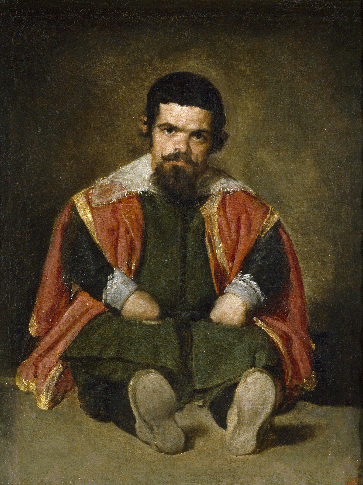
Pero la cosa consiste además en que en este cuadro Velázquez, por así decirlo, hace balance de su obra y establece en el mundo un orden de cosas completamente distinto. Es un pintor que muestra en su cuadro un mundo reconstruido. Él, en su obra, reconstruye el mundo según su propio escalafón, según su propia jerarquía de valores. En esa jerarquía de Velázquez, la bufona y la niña pequeña ocupan el lugar central, siendo además signos inversos la una de la otra: por un lado, la deformidad física y la extraordinaria potencia pasionaria de esa enana Bárbola; por otro lado, Margarita, bonita como una muñeca, de cabellos claros, pero al mismo tiempo un ser condenado. Velázquez lo subraya directamente, pero para entender el sentido del cuadro hay que conocer un poco su texto interno.
Una de las meninas da a la infanta una tacita roja. Son niños que no tenían derecho ni a pedir de beber ni a servirse agua. No podían beber hasta que una menina especial les trajera agua en la tacita roja. Siendo herederos del trono, eran máscaras, marionetas. Eran tan impotentes que ni siquiera podían emborracharse por sí mismos. Y estos héroes están en primer plano, porque son el eje principal de la obra de Velázquez, y los demás personajes están arrojados al espacio, al difuso más allá del espejo.
Pero tal orden de cosas existe solo cuando Velázquez toma el pincel en las manos. Entonces se convierte en señor del mundo, entonces el mundo existe tal como Velázquez lo ve. No solo destruye los estereotipos de la estructura social, sino que trastoca el mundo creando su sistema de valores, y en ese sistema de valores todo existe tal como él desea. Ese orden de valores forma la historia, porque si no fuera por él, nunca en el siglo XX se habría hablado de una niña pequeña, de las que hay legión, y de un tal insignificante Felipe IV. Se volvieron inmortales a través de la obra de Velázquez.
En el momento en que Velázquez suelta el pincel, todo se restablece. Se convierte en un pobre caballero, un hombre que toda la vida tuvo que demostrar su derecho a la nobleza solo para dejar algo a sus hijos. No tenía derecho a tomar dinero por sus obras42, porque los hidalgos españoles no tienen derecho a tener dinero en las manos. ¡En qué trágica ruptura debía vivir entre aquel gran mundo que poseía, como un mago que toma el pincel, como un director de orquesta mundial, y la pequeña posición que se veía obligado a arrastrar durante toda su vida!
Velázquez vivió la vida de una personalidad anónima, no era conocido, y sin embargo la historia entra en nosotros precisamente a través de él y precisamente en el orden que crea ese grandísimo director de orquesta.
Hay variantes aún más serias, aún más profundas. Las da Durero, y es ya un retrato de otro tipo.
He aquí un retrato de la Galería de Dresde, pintado por Durero. En su composición se repite siempre una ley determinada, que puede observarse en Miguel Ángel en su tumba de los Médici. Esa ley es el marco de la ventana y la figura. En Durero el marco es siempre menor y la figura mayor. En el cuadro «Los cuatro evangelistas»43, el enorme despliegue de las figuras interiores y el marco bajo constituyen una evidente no coincidencia. Exactamente igual que en la hornacina de la tumba de los Médici, Lorenzo y Juliano son tres veces mayores que el espacio que les está asignado.
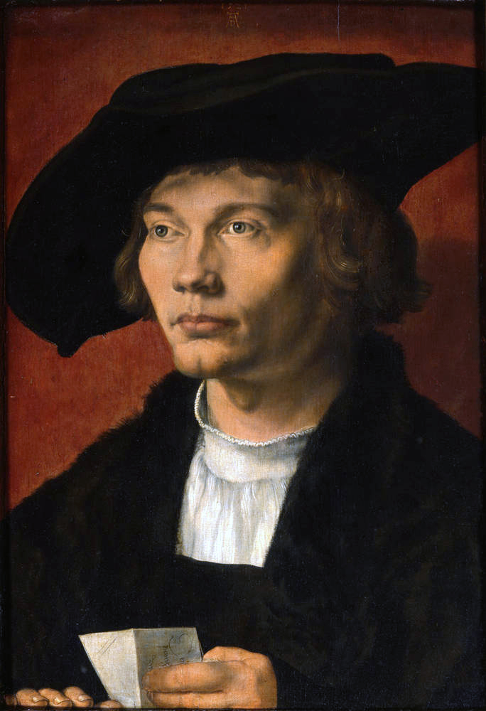
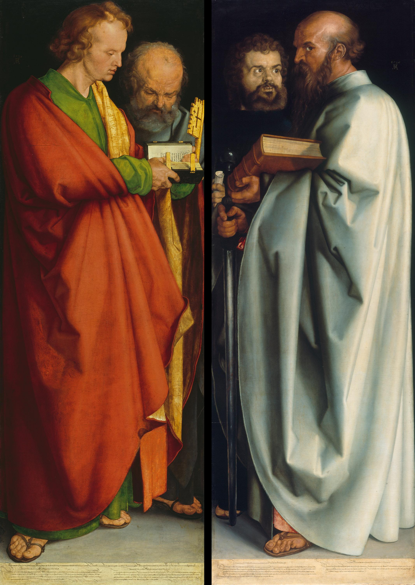
Los especialistas suelen explicarlo por las tradiciones góticas. Explicar se puede cualquier cosa. Aquí hay opiniones diversas. Pero seguramente son realmente tradiciones góticas que le quedaron a Durero, aunque en todo lo demás no tiene ninguna relación con las tradiciones góticas y va mucho más allá de los límites de cualesquiera tradiciones. Él existe por sí mismo en el espacio. A ese espacio salen figuras como Rembrandt, Velázquez, Vrúbel, Durero. Y es difícil decir por qué ese único rudimento gótico se conserva en Durero. Probablemente en esa no coincidencia entre el marco muy pequeño y la personalidad que nos mira desde detrás del espejo hay algo más de lo que ve nuestra mirada.
Estos retratos de Durero son curiosos por sus características, porque son retratos de extraordinaria fuerza espiritual, son retratos de compañeros espirituales, retratos de caracteres únicos en su género. Puede decirse que Durero es el primer pintor que crea retratos de intelectuales en el pleno sentido de la palabra.
Especialmente interesante es esto en relación con sus contemporáneos, magníficos pintores: Holbein, maestro de la máscara, o Grünewald, que se consume bajo el peso de la tragedia. Durero es extremadamente concreto, está ocupado con la personalidad humana, con el carácter humano. Es siempre monolítico, siempre dirigido. Tales son los retratos de personalidades que se distinguen moral y espiritualmente de las demás. No tiene esos conflictos, ese drama, salvo el que hay entre el marco y la imagen, que siempre es mayor que el marco. Sus retratos tienen una asombrosa fuerza espiritual. Pero ya hablamos de que la personalidad del pintor debe ser algo más de lo que hace, porque debe dominar ese material.
Una de las cosas más asombrosas en ese sentido es el autorretrato de Alberto Durero. Velázquez es señor del mundo, mago que construye el mundo según su propia representación de las cosas. Pero cuando se quita el manto, se convierte en un hombre absolutamente inadaptado a la vida. Esa dualidad de la personalidad de Velázquez recuerda al personaje autobiográfico de Shakespeare, Próspero. La misma dualidad hay en el autorretrato de Durero. Esa batita de ardilla, la mano nerviosa y la cabeza asombrosa. Este retrato recuerda mucho a la imagen de Cristo. Los cabellos dorados peinados hacia dos lados, tres rizos dorados, construcción absolutamente frontal del retrato. La iconografía de este retrato está muy cerca de la iconografía de Cristo. ¡Qué responsabilidad hay que tener por lo que uno hace, viviendo en Alemania en el siglo XVI, para pintar así su autorretrato! Durero muestra la dualidad trágica. Vemos una personalidad nerviosa que manosea la batita de ardilla. Como si dijera: «Soy un burgués». O, como decía Pushkin: «Soy simplemente un pequeño burgués ruso»44. Y vemos la ruptura entre ese burgués y lo que posee, lo que sabe y lo que puede. Estas personas simplemente conocían la medida de sus posibilidades y respondían plenamente por ellas. Conocían también la medida de la trágica escisión: soy hombre, soy burgués, estoy en bata, y al mismo tiempo soy más que el doctor Fausto, soy maestro, pues Cristo se llamaba maestro.

No vamos a establecer analogías entre el concepto de maestro en la Edad Media y ese alto título que se daba al pintor: Maestro con mayúscula. En todo caso, bajo esto se entendía siempre una cosa: la posesión de la verdad. Precisamente por eso Bulgákov llama Maestro a su héroe, porque posee la verdad. Le da ese título anónimo y al mismo tiempo supremo del artista que posee ya los más altos misterios, la verdad más alta. Y he aquí que al estilo del Maestro se representa Durero. Recordemos además que precisamente a Durero hace Thomas Mann en su novela el segundo héroe respecto a Leverkühn, el doctor Fausto. Él es ese mismo doctor Fausto vivo. Pero si Leverkühn es pecador, vende su alma al diablo, en la conversación de Leverkühn con el diablo este dice de Durero: «Él se arregló sin nosotros»45. Y ellos no se arreglaron sin él. El pintor conoce exactamente la medida de responsabilidad que asume.
Es muy interesante, al mismo tiempo, que si en los retratos de Rembrandt, Vrúbel y muchos otros podemos hablar de rasgos de individualidad, de cualidades irrepetiblemente personales, aquí el nivel de la personalidad es tal que la posesión de la verdad convierte a esa personalidad en anónima. Es Durero y no es Durero. A esa personalidad se le comunican rasgos casi no personales.
En su autorretrato hay esa dualidad: la compleja combinación de la batita de ardilla y la anonimia del Maestro. Pero al mismo tiempo pesan más la cabeza y los ojos asombrosos. Aquí aparecen ya elementos extrapersonales. Y este es un retrato del tercer tipo: retrato de la esencia espiritual pura.
Aquí ya caen todos los momentos de las pasiones humanas. El retrato de Durero es un momento personal, temporal, y un momento ya suprapersonal. De tales retratos, retratos de esencia espiritual, hay muy pocos. En cierto sentido el retrato de esencia espiritual y el retrato-máscara, el escalón superior y el inferior, coinciden. Pero solo en el primer caso es un retrato de absoluta libertad espiritual, y en el segundo es un retrato de sojuzgamiento espiritual y social.
Definir el grupo de estos retratos es muy difícil. En su forma más pura es, sin duda alguna, el icono. Cualquier icono es un retrato del tercer tipo, porque es un retrato suprapersonal, retrato de la esencia espiritual, del ascetismo espiritual. Es el paso a través de la frontera: hacia el martirio, los sufrimientos, la muerte. Porque no hay absolutamente ninguna biografía hagiográfica que no tenga ese punto de prueba.
Como el retrato-máscara, el retrato de esencia espiritual puede llamarse emocionalmente indiferente. Aquí la emoción se desconecta. Aquí todo se sustituye por el puro ejemplo de la pasión espiritual.
Muy interesante en ese sentido es considerar el icono hagiográfico. Es el retrato del rostro, cuando ya no hay faz, no hay máscara, sino rostro puro, anónimo puro, verdad pura. Es asombrosa la construcción del icono hagiográfico. El icono hagiográfico es muy literario, porque en él están presentes elementos de la biografía de ese santo. Por ejemplo, el icono de San Nicolás. Aquí hay marcas muy pequeñas, están dispuestas en un orden determinado, y cada marca representa un episodio acabado. Todas juntas crean una narración sobre el devenir espiritual de la personalidad.
En la literatura, de tal modo puede considerarse a Andrés Bolkonski. Tolstói da la biografía hagiográfica de Bolkonski, el camino del devenir espiritual de la personalidad, el camino de la pasión. Allí están todos los signos de esto, comenzando por que nunca vemos a Andrés Bolkonski en matrimonio46, siempre lo vemos en celibato. Todo su camino es camino de devenir espiritual. Allí hay dos imágenes completamente divergentes que comienzan en un mismo punto: Pierre Bezújov y Andrés Bolkonski. No son antípodas. Simplemente Pierre da la imagen de una personalidad puramente pasionaria, y Andrés Bolkonski, la imagen puramente espiritual. Puede discutirse esta afirmación, pero para eso existe la literatura artística, que en general no existe, sino que existe su lectura.
Y por eso retratos de tal tipo hay muy pocos. El pintor, para pintar tal retrato, debe él mismo estar en ese nivel. ¿Y hay muchos pintores que en el plano espiritual estén en el nivel de Velázquez o de Rembrandt?
Pero algunos ejemplos hay. Uno de ellos es el retrato de Nesterov «La aparición al joven Bartolomé». Es precisamente un retrato de esencia espiritual. Aquí no se trata de un niño pastor, sino ya de un vaso humano, tan puro, tan sagrado, que desde la infancia comprende su misión espiritual. Y es misión de ascetismo espiritual, porque, como se sabe, ante nosotros está el futuro Sergio de Radonezh. Aquí está representada la aparición a Sergio de Radonezh47 y el lugar donde fue fundada la Laura de la Trinidad y San Sergio.
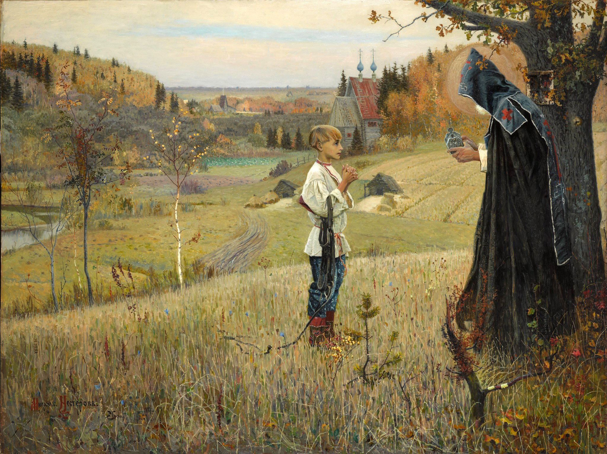
La personalidad de Sergio de Radonezh está aún muy poco estudiada y revelada en la historia, pero para la historia rusa es muy importante. Está vinculada a uno de los estados más tensos y pasionarios del arte, a una época determinada: el siglo XIV.
Nesterov tiene en general inclinación a representar el ascetismo espiritual. Siempre busca ese rasgo en sus retratos, independientemente de qué retrato pinte. Siempre pinta el retrato de un cierto devenir espiritual o creativo, donde la personalidad se encuentra en estado de tensión espiritual. Pinta a Pávlov en el momento de concentración48, con los puños puestos ante sí. Pinta el retrato de Mujina en el momento de crear la escultura, el retrato de Shadr en el momento de crear la escultura. Estas personas están captadas en el momento de su tensión espiritual.
Pero, por supuesto, su obra más fuerte es «La aparición al joven Bartolomé».
Se piensa que también son retratos de tal tipo los retratos de El Greco. Sus héroes, aunque sean nobles caballeros, hidalgos, vestidos de negro, con cuellos blancos, son personas de las que ya se ha apartado el tormento de las pasiones del mundo. La manera particular de El Greco, su verticalismo, está vinculada no tanto a nuestro concepto de verticalismo cuanto al sentido que le daba la moda de aquel tiempo.
Juzguen ustedes mismos: si las personas andaban con corsés, muy apretadamente encorsetadas, el verticalismo en sí entraba en el aspecto del hombre. Estaba de moda la barba estrecha, la cabeza debía llevarse alta, y además en la cabeza un gorro: la boina española, y además en la boina española oscila una pluma sin fijar. Perderla es muy mala señal. El que la pierde es un hombre acabado. Por eso aquí el propio lado disciplinario de la cultura española estaba orientado por la vertical. Pero no se trata de eso.
Y no se trata de que El Greco fuera hijo de pintores de iconos cretenses49 y de que él mismo en su juventud pintara iconos. Se trata de que su propia manera pictórica está orientada a la representación de una envoltura material extremadamente adelgazada. La carne como si dejara de existir. Un poco más y desaparecerá del todo.
He aquí el muy conocido «Retrato del helenista sordomudo». El sutilísimo y asombroso lenguaje del pincel de El Greco hace la materia ya casi impalpable. El Greco adelgaza sus límites, desnudando absolutamente ante nosotros la esencia espiritual, que se encuentra en un nivel muy alto de devenir espiritual de la personalidad.
¿Por qué hay que pasar para acercarse a esto? Es realmente el camino de la hazaña espiritual, del devenir espiritual. Son puntos culminantes desde los que se cuenta la norma moral y ética. Y retratos así hay extraordinariamente pocos, porque los propios pintores que pueden saber esto son muy pocos.
A tales retratos puede referirse «La Gioconda» de Leonardo da Vinci. Aquí la cuestión es infinitamente compleja. Si hablamos de que es un retrato de esencia espiritual, debe poseer la mayor potencia espiritual. Si decimos que aquí la personalidad se disuelve, es sin duda así. Pero mirando solo «La Gioconda» no puede entenderse el nivel desde el que Leonardo mira el mundo. Nos importa además el punto desde el que mira. El nivel de ese punto debe obligatoriamente elevarse.
Es muy interesante cómo esta imagen de Leonardo ha sido transformada e interpretada por Visconti en su película «Muerte en Venecia»50. Visconti no en vano vincula a su héroe con el muchacho que tiene todos los rasgos del ángel-demonio leonardesco. No hay separación, sino una cierta unión mágica. En eso está la esencia misma de la creación.
Es la gran unión de la que escribió Platón como unión «suprema y armónica». En estos cuadros están realizadas las ideas platónicas. Y la realización de la idea platónica del andrógino en Leonardo por su grandeza espiritual no es en absoluto inferior, digamos, al rostro, al icono, que es un ejemplo puro del retrato del tercer tipo. Aquí podría nombrarse también los retratos de Buda.
Es el criterio supremo, el punto supremo por el que la humanidad cuenta sus valores morales y éticos. Leonardo era platónico, como todos los hombres de la época del Renacimiento. Y aquí está la idea más alta del andrógino platónico. El único caso en que ese momento quedó plenamente captado, porque el propio Leonardo lo poseía y él mismo lo personificaba en sí.
Terminando la conversación sobre el retrato, volvamos a lo que se dijo al principio. Si hay retratos de colectivo, digamos, en Bruegel o en Deineka, también hay un colectivo que asoma a través de una persona. Y en el arte antiguo todo un colectivo de jóvenes ideales, modélicos, está concentrado en un solo efebo. Se trata del auriga de Delfos. Aquí como si toda la Grecia antigua nos mirara. Pero la Antigüedad no sería Antigüedad, no habría podido convertirse en medida de los valores espirituales, servir con su persona a todo el espacio del arte europeo, si no ocultara en sí además un profundo valor ético y un profundo valor espiritual. Porque ese quiasmo del que hablamos más arriba tiene además un profundo contenido. Aquí hay una doble esencia.
Si en Leonardo, en su «Gioconda», hay una androginia neoplatónica, aquí en igual medida podemos conocer la Antigüedad a través de su modelo social y a través de sus altos patrones espirituales. Será justo decir que el auriga de Delfos es un joven social, idealmente adaptado. Exactamente igual, con el mismo derecho, podemos adscribir este retrato, en este único caso, a los retratos ideales en el plano espiritual-ético del hombre.
Notas del editor
1. Manana Andrónikova (1923–1993), historiadora del arte georgiano-rusa, autora de «El retrato: de las pinturas rupestres a la fotografía de estudio» («Портрет. От наскальных рисунков до звукового фильма», 1980).
2. El culto a los mártires es anterior a la Gran Persecución de Diocleciano (303–311): ya en el siglo II se veneraba, por ejemplo, a Policarpo de Esmirna. Tampoco hubo entonces «canonización» en sentido formal: los procesos de canonización papal datan de finales del siglo X.
3. La anécdota la recoge Niccolò Martelli en una carta de 1544: Miguel Ángel habría respondido que dentro de mil años nadie sabría cómo eran los duques.
4. Aleksandr Deineka, «La defensa de Sebastopol» (1942, Museo Estatal Ruso). Llamarlo «retrato colectivo» es una licencia de la autora: es un cuadro de historia con figuras anónimas.
5. Mari Bárbola no lleva orden alguna ni ocupaba «un cargo muy alto». Véase la nota correspondiente del capítulo 17.
6. Es una afirmación excesiva. El retrato griego existe al menos desde el siglo V a. C. (Pericles de Crésilas, Temístocles de Ostia) y se desarrolla plenamente en el siglo IV y en el helenismo (Lisipo, los retratos de Alejandro y de los filósofos). Roma lo heredó y lo llevó al verismo.
7. La identificación del rostro de la piel que sostiene san Bartolomé con un autorretrato de Miguel Ángel la propuso Francesco La Cava en 1925 y hoy está ampliamente aceptada.
8. El paisaje como género autónomo aparece ya en el siglo XVI con Albrecht Altdorfer, Joachim Patinir y, antes aún, en los dibujos de Durero y Leonardo.
9. La «Canasta de frutas» de Caravaggio (h. 1597–1600, Pinacoteca Ambrosiana, Milán) suele citarse como el primer bodegón italiano autónomo. Pero hay precedentes nórdicos y españoles, como Sánchez Cotán, casi contemporáneos.
10. La cronología es muy aproximada: la cultura china del Neolítico (Yangshao, Longshan) es anterior, y la pintura de paisaje como género nace mucho después, hacia los siglos IV–X d. C.
11. Seguramente se refiere a la Academia de Pintura de la corte de los Song (siglos XI–XII). Los «seis principios» de la pintura china los formuló Xie He hacia el año 500.
12. La autora confunde términos. La frenología es una doctrina europea de Franz Joseph Gall (h. 1800) que relaciona el cráneo con las facultades mentales. La tradición china es la fisiognomía (mianxiang, «lectura del rostro»), que sí dividía el rostro en regiones asociadas a montañas y elementos.
13. Marie-Thérèse Walter (1909–1977), amante de Picasso y madre de su hija Maya, a la que retrató muchas veces entre 1927 y 1937. La autora no precisa qué dos retratos compara, por lo que no se reproducen.
14. «Ese oscuro objeto del deseo» (1977), última película de Buñuel, que la rodó a los setenta y siete años. El doble papel de Conchita lo interpretan Carole Bouquet y Ángela Molina.
15. Juego etimológico intraducible. El ruso «лицедей», «actor, farsante», se forma con «лицо», «rostro», y «деять», «hacer»: literalmente, «el que hace rostros».
16. La autora no nombra el retrato. Por la descripción —una muchacha en traje pastoril en pose de danza— se trata con toda probabilidad de uno de los retratos de alumnas del Instituto Smolni pintados por Levitski, el de Ekaterina Nelídova (1773, Museo Estatal Ruso).
17. Varvara Ikskul von Hildenbandt (1850–1929), escritora, editora y filántropa, fundadora de una comunidad de enfermeras en San Petersburgo. No está claro a qué se refiere la autora al insinuar un pasado inconfesable. En su juventud hubo un divorcio y un segundo matrimonio, nada extraordinario en su medio.
18. Última estrofa de «Retrato» (1953), de Nikolái Zabolotski, dedicado al retrato de Aleksandra Struiskaya pintado por Fiódor Rokótov (1772, Galería Tretiakov). Véase también el capítulo 15.
19. Se refiere a la reconstrucción de la voz de la «Mona Lisa» realizada en 2006 por el especialista japonés en acústica Matsumi Suzuki a partir de la morfología del rostro. La tesis de que la Gioconda sea un autorretrato disfrazado de Leonardo la popularizó Lillian Schwartz en 1987. Carece de fundamento: la modelo es con toda probabilidad Lisa Gherardini, esposa de Francesco del Giocondo.
20. Las estatuas de Rahotep y Nofret (h. 2600 a. C., Museo Egipcio de El Cairo) son de piedra caliza policromada. Los ojos llevan incrustaciones de cuarzo y cristal de roca, lo que les da su célebre viveza.
21. No hemos podido localizar esta frase en los papiros médicos egipcios (Ebers, Edwin Smith). El papiro Ebers dedica una sección extensa a las enfermedades oculares, con tratamientos físicos.
22. Antonio de Covarrubias (1524–1602), jurista y helenista, que se quedó sordo en la vejez, y su hermano Diego (1512–1577), obispo de Segovia y presidente del Consejo de Castilla. El Greco retrató a ambos.
23. Ippolito Riminaldi (1520–1589) fue un jurista ferrarense, no veneciano. La identificación con él del retrato de Tiziano conocido como «El joven inglés» (Palazzo Pitti) es una hipótesis. Hay otro retrato de Riminaldi atribuido a Tiziano en la Accademia di San Luca de Roma.
24. Probablemente la anécdota se refiere a la exposición de los cuadros de Dresde en Moscú en 1955, antes de su devolución a la RDA. No hemos podido documentarla ni identificar el Moretto en cuestión.
25. La autora no identifica el retrato. David pintó muchos retratos masculinos de este tipo, por lo que no se reproduce.
26. No conocemos ningún estudio que relacione la coronación de Ricardo III en Shakespeare con la de Augusto en los historiadores romanos. Shakespeare siguió a Holinshed y a Tomás Moro.
27. Es cierto que las estatuas del emperador eran lugar de asilo (ad statuas confugere), pero el derecho de asilo no daba acceso a un juicio «personal ante el emperador».
28. El Cupido sobre el delfín alude a Venus, antepasada mítica de la gens Julia, y no a un emblema de la «casa imperial» propiamente dicha.
29. La estatua ecuestre romana conservada que sirvió de modelo a todas las posteriores es la de Marco Aurelio (Capitolio). De Trajano no se conserva ninguna. El monumento a Yuri Dolgoruki en Moscú es de Serguéi Orlov (1954).
30. El «Retrato de una verdulera» del Musée des Beaux-Arts de Lyon (h. 1795) se atribuyó tradicionalmente a David, pero hoy su autoría se discute.
31. El texto ruso dice «Питер Брейгель Мужицкий», «el Campesino». Se unifica con la forma usual en español, «el Viejo», como en el capítulo 17.
32. «Mi tío de América» (1980), de Alain Resnais. El científico que expone sus teorías es el neurobiólogo Henri Laborit, cirujano e investigador del comportamiento, no psiquiatra.
33. Policleto de Argos (activo h. 460–420 a. C.) no pudo ser discípulo de Pitágoras (h. 570–495 a. C.). La relación de su «Canon» con el pensamiento pitagórico es una hipótesis de los estudiosos. Tampoco hay relación con la escuela de Mileto.
34. Según la tradición, en el canon de Policleto la cabeza mide una séptima parte de la altura del cuerpo. Lisipo la reduce a un octavo. La «proporción áurea» no aparece en las fuentes antiguas sobre Policleto (Galeno, Plinio); el canon se basaba en las relaciones entre las partes, partiendo del dedo. El hombre inscrito en el círculo y el cuadrado procede de Vitruvio, no de Policleto.
35. Muchas estatuas antiguas han perdido la cabeza porque el cuello es su punto más frágil, y porque en época romana se tallaban cabezas-retrato por separado para insertarlas en cuerpos estándar.
36. Ninguna fuente antigua exige esto. La escultura griega estaba policromada, y los atletas se representaban con piel morena.
37. No hemos localizado esta cita.
38. Las guildas o gremios de San Lucas existían en toda Europa desde la Edad Media (Amberes, 1382; Florencia tenía su Compagnia di San Luca desde el siglo XIV). La especialización rígida de géneros en Holanda era más una dinámica del mercado que una ley del gremio.
39. Probablemente «Rembrandt» (1999), de Charles Matton, o «Rembrandt» (1992), de Jos Stelling. La autora no da el nombre.
40. La persona de la puerta del fondo es José Nieto Velázquez, aposentador de la reina, no un «jefe de la policía secreta». Sobre Mari Bárbola, véase la nota del capítulo 17.
41. Véase la nota del capítulo 17 sobre Diego de Acedo, «el Primo».
42. Velázquez cobraba sueldo como pintor del rey y por sus cargos palaciegos. Lo que las pruebas para el hábito de Santiago tuvieron que salvar fue la sospecha de que hubiera ejercido la pintura como oficio mercantil, vendiendo cuadros.
43. El título correcto es «Los cuatro apóstoles» (1526, Alte Pinakothek, Múnich): Juan, Pedro, Marcos y Pablo. Marcos es evangelista, pero Pedro y Pablo no.
44. Verso de «Mi genealogía» (1830), de Pushkin: «Я просто русский мещанин» («Soy un simple menestral ruso»). Pushkin lo dice con ironía, para responder a quienes se burlaban de sus antepasados.
45. No hemos encontrado esta frase en el diálogo de Leverkühn con el diablo en «Doktor Faustus» (1947) de Thomas Mann. Durero está presente en la novela a través de la «Melencolia I» y del ciclo del Apocalipsis, que inspira el oratorio de Leverkühn.
46. Inexacto: al comienzo de «Guerra y paz» Andréi Bolkonski está casado con Liza, la «pequeña princesa», que muere de parto. Después se promete con Natasha Rostova, pero no llega a casarse con ella.
47. El monasterio de la Trinidad y San Sergio se fundó hacia 1337 en el bosque de Radonezh; el cuadro de Nésterov no representa ese lugar concreto. Sobre el episodio, véase la nota correspondiente del capítulo 17.
48. Mijaíl Nésterov: «Retrato del académico Iván Pávlov» (1935, Galería Tretiakov), «Retrato de la escultora Vera Mújina» (1940) y «Retrato del escultor Iván Shadr» (1934).
49. Véase la nota 1 del capítulo 16: El Greco fue pintor de iconos, pero no consta que su familia lo fuera.
50. «Muerte en Venecia» (1971), adaptación de la novela de Thomas Mann (1912). Tadzio lo interpreta Björn Andrésen.